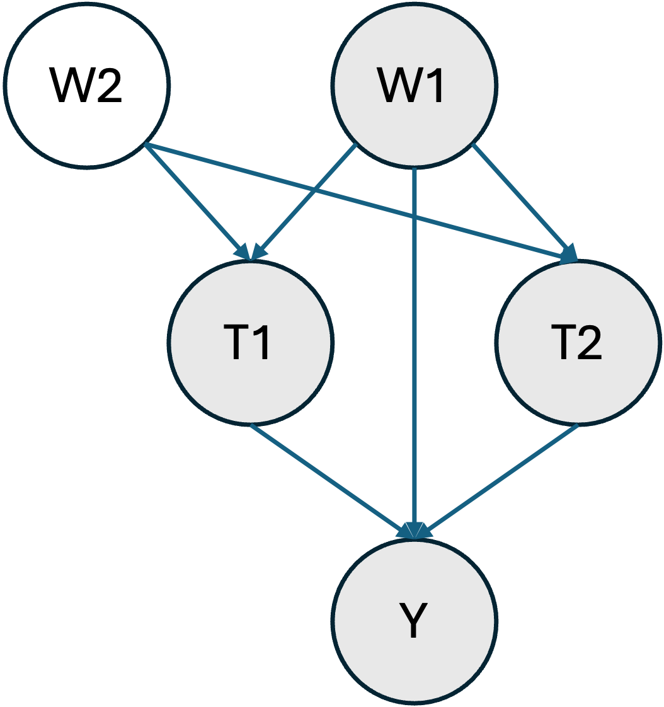
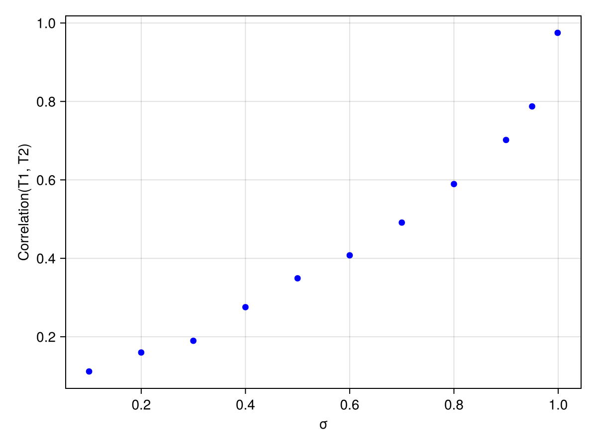
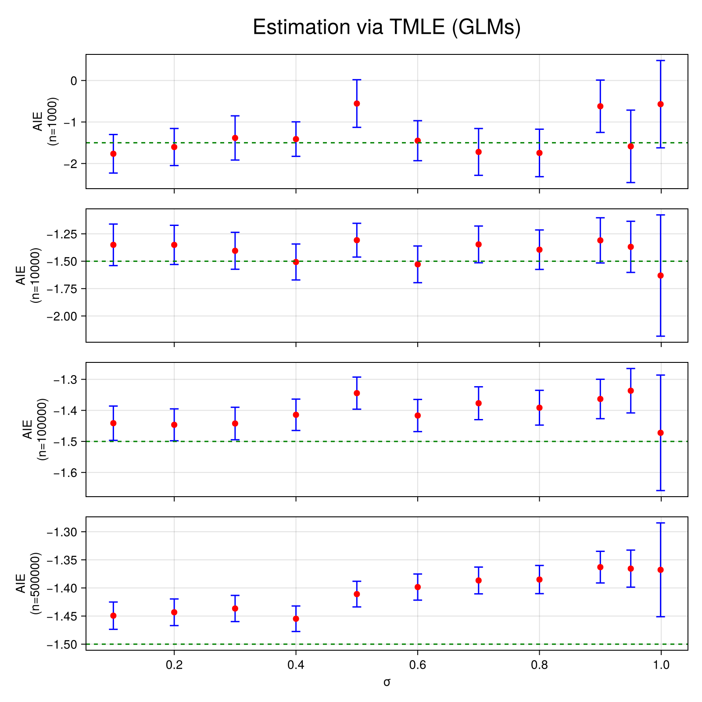
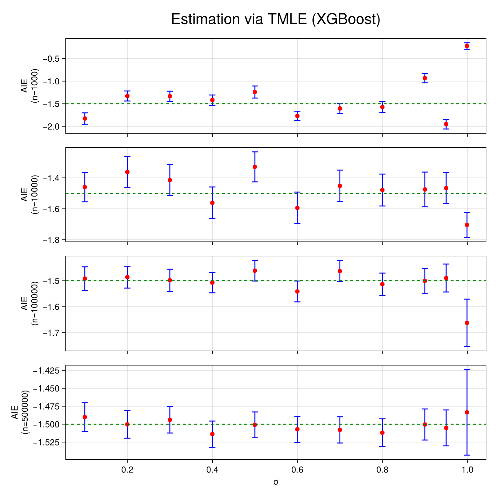
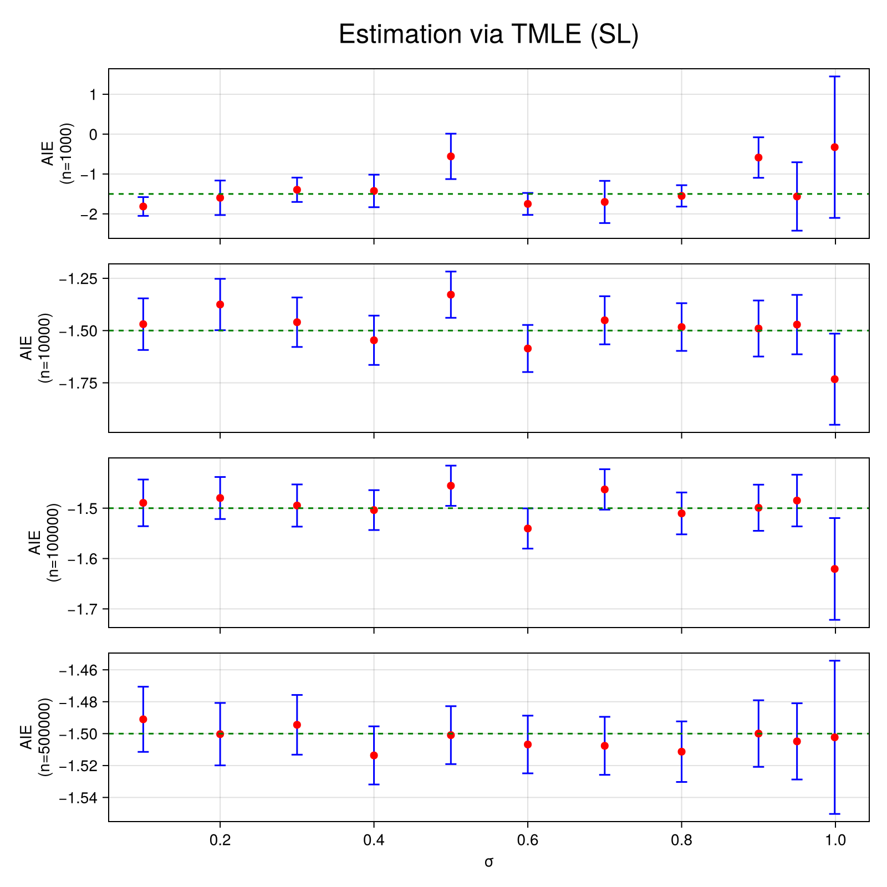

Interaction Estimation
In this example we aim to estimate the average interaction effect of two, potentially correlated, treatment variables T1 and T2 on an outcome Y.
Data Generating Process
Let's consider the following structural causal model where the shaded nodes represent the observed variables.

In other words, only one confounding variable is observed (W1). This would be a major problem if we wanted to estimate the average treatment effect of T1 or T2 on Y separately. However, here, we are interested in interactions and thus W1 is a sufficient adjustment set. This artificial situation is ubiquitous in genetics, where two main sources of confounding exist. Ancestry, can be estimated (here W1) and linkage disequilibrium is usually more challenging to address (here W2).
Let us first define some helper functions and import some libraries.
using Distributions
using Random
using DataFrames
using Statistics
using CategoricalArrays
using TMLE
using CairoMakie
using MLJXGBoostInterface
using MLJBase
using MLJLinearModels
using MLJTuning
using StatisticalMeasures
function estimate_across_correlation_levels(estimators, σs; n=1000)
results = Dict(key => [] for key in keys(estimators))
for σ in σs
dataset = generate_dataset(n=n, σ=σ)
for (estimator_key, estimator) in estimators
result, _ = estimator(Ψ, dataset; verbosity=0)
push!(results[estimator_key], result)
end
end
return results
end
function estimate_across_sample_sizes_and_correlation_levels(estimators, ns, σs)
results = []
for n in ns
results_at_n = estimate_across_correlation_levels(estimators, σs; n=n)
push!(results, results_at_n)
end
return results
end
function plot_across_sample_sizes_and_correlation_levels(results, ns, σs; estimator="TMLE_SL", title="Estimation via TMLE (GLMs)")
fig = Figure(size=(800, 800))
for (index, n) in enumerate(ns)
results_at_n = results[index][estimator]
Ψ̂s = TMLE.estimate.(results_at_n)
errors = last.(confint.(significance_test.(results_at_n))) .- Ψ̂s
ax = if n == last(ns)
Axis(fig[index, 1], xlabel="σ", ylabel="AIE\n(n=$n)")
else
Axis(fig[index, 1], ylabel="AIE\n(n=$n)", xticklabelsvisible=false)
end
errorbars!(ax, σs, Ψ̂s, errors, color = :blue, whiskerwidth = 10)
scatter!(ax, σs, Ψ̂s, color=:red, markersize=10)
hlines!(ax, [-1.5], color=:green, linestyle=:dash)
end
Label(fig[0, :], title; tellwidth=false, fontsize=24)
return fig
end
Random.seed!(123)
μT(w) = [sum(w), sum(w)]
μY(t, w) = 1 + 10t[1] - 3t[2] * t[1] * wμY (generic function with 1 method)We assume that W1 and W2, the confounding variables, follow a uniform distribution.
generate_W(n) = rand(Uniform(0, 1), 2, n)generate_W (generic function with 1 method)T1 and T2 are generated via a copula method through a multivariate normal to induce some statistical dependence (via σ).
function generate_T(W, n; σ=0.5, threshold=0)
covariance = [
1. σ
σ 1.
]
T = zeros(Bool, 2, n)
for i in 1:n
dTi = MultivariateNormal(μT(W[:, i]), covariance)
T[:, i] = rand(dTi) .> threshold
end
return T
endgenerate_T (generic function with 1 method)Finally, Y is generated through a simple linear model with an interaction term.
function generate_Y(T, W1, n; σY=1)
Y = zeros(Float64, n)
for i in 1:n
dY = Normal(μY(T[:, i], W1[i]), σY)
Y[i] = rand(dY)
end
return Y
endgenerate_Y (generic function with 1 method)Importantly, the average interaction effect between T1 and T2 is thus $-3 \mathbb{E}[W] = -1.5$.
We will generate a full dataset with the following function.
function generate_dataset(;n=1000, σ=0.5, threshold=0., σY=1)
W = generate_W(n)
T = generate_T(W, n; σ=σ, threshold=threshold)
W = permutedims(W)
W1 = W[:, 1]
W2 = W[:, 2]
Y = generate_Y(T, W1, n; σY=σY)
T = permutedims(T)
T1 = categorical(T[:, 1])
T2 = categorical(T[:, 2])
return DataFrame(W1=W1, W2=W2, T1=T1, T2=T2, Y=Y)
end
dataset = generate_dataset()
first(dataset, 5)| Row | W1 | W2 | T1 | T2 | Y |
|---|---|---|---|---|---|
| Float64 | Float64 | Cat… | Cat… | Float64 | |
| 1 | 0.9063 | 0.443494 | true | true | 7.34663 |
| 2 | 0.745673 | 0.512083 | true | true | 6.30484 |
| 3 | 0.253849 | 0.334152 | true | true | 9.73191 |
| 4 | 0.427328 | 0.867547 | true | false | 9.49304 |
| 5 | 0.0991336 | 0.125287 | true | true | 11.2495 |
Let's verify that each treatment level is sufficiently present in the dataset (≈positivity).
combine(groupby(dataset, [:T1, :T2]), proprow => :JOINT_TREATMENT_FREQ)| Row | T1 | T2 | JOINT_TREATMENT_FREQ |
|---|---|---|---|
| Cat… | Cat… | Float64 | |
| 1 | false | false | 0.073 |
| 2 | false | true | 0.098 |
| 3 | true | false | 0.107 |
| 4 | true | true | 0.722 |
And that T1 and T2 are indeed correlated.
treatment_correlation(dataset) = cor(unwrap.(dataset.T1), unwrap.(dataset.T2))
treatment_correlation(dataset)0.2918769031970086Estimation
We can now proceed to estimation, for instance using TMLE with linear models.
First, let's define the effect of interest. Interactions are defined via the AIE function (note that we only set W1 as a confounder).
Ψ = AIE(
outcome=:Y,
treatment_values= (
T1=(case=1, control=0),
T2=(case=1, control=0)
),
treatment_confounders = [:W1]
)
linear_models = default_models(G=LogisticClassifier(lambda=0), Q_continuous=LinearRegressor())
estimator = Tmle(models=linear_models, weighted=true)
result, _ = estimator(Ψ, dataset; verbosity=0)
significance_test(result)One sample t-test
-----------------
Population details:
parameter of interest: Mean
value under h_0: 0
point estimate: -1.61436
95% confidence interval: (-2.232, -0.997)
Test summary:
outcome with 95% confidence: reject h_0
two-sided p-value: <1e-06
Details:
number of observations: 1000
t-statistic: -5.13115
degrees of freedom: 999
empirical standard error: 0.31462
The true effect size is thus covered by our confidence interval.
Varying levels of correlation
We will now vary the correlation level between T1 and T2 to observe how it affects the estimation results across samples sizes. We will also look at three different modelling strategies:
- Generalized linear models (GLMs)
- XGBoost
- Super Learning (SL) via a model selection approach
First, let's see how the parameter σ affects the correlation between T1 and T2.
function plot_correlations(;σs = 0.1:0.1:1, n=1000, threshold=0., σY=1.)
fig = Figure()
ax = Axis(fig[1, 1], xlabel="σ", ylabel="Correlation(T1, T2)")
correlations = map(σs) do σ
dataset = generate_dataset(;n=n, σ=σ, threshold=threshold, σY=σY)
return treatment_correlation(dataset)
end
scatter!(ax, σs, correlations, color=:blue)
return fig
end
σs = [0.1, 0.2, 0.3, 0.4, 0.5, 0.6, 0.7, 0.8, 0.9, 0.95, 0.999]
plot_correlations(;σs=σs, n=10_000)
As expected, the correlation between T1 and T2 increases with σ. Let's see how this affects estimation.
We first define our Super Learners, they compare L2 penalized GLM and XGboost models for various penalization parameters λ on a holdout set and select the best model.
lambdas = 10 .^ range(1, stop=-4, length=5)
linear_regressors = [RidgeRegressor(lambda=λ) for λ in lambdas]
logistic_classifiers = [LogisticClassifier(lambda=λ) for λ in lambdas]
xgboost_classifiers = [XGBoostClassifier(tree_method="hist", lambda=λ, nthread=1) for λ in lambdas]
xgboost_regressors = [XGBoostRegressor(tree_method="hist", lambda=λ, nthread=1) for λ in lambdas]
sl_regressor = TunedModel(
models=vcat(linear_regressors, xgboost_regressors),
resampling=Holdout(),
measure=rmse,
check_measure=false
)
sl_classifier = TunedModel(
models=vcat(logistic_classifiers, xgboost_classifiers),
resampling=Holdout(),
measure=log_loss,
check_measure=false
)ProbabilisticTunedModel(
model = LogisticClassifier(
lambda = 10.0,
gamma = 0.0,
penalty = :l2,
fit_intercept = true,
penalize_intercept = false,
scale_penalty_with_samples = true,
solver = nothing),
tuning = Explicit(),
resampling = Holdout(
fraction_train = 0.7,
shuffle = false,
rng = Random.TaskLocalRNG()),
measure = LogLoss(tol = 2.22045e-16),
weights = nothing,
class_weights = nothing,
operation = nothing,
range = MLJModelInterface.Probabilistic[LogisticClassifier(lambda = 10.0, …), LogisticClassifier(lambda = 0.5623413251903491, …), LogisticClassifier(lambda = 0.03162277660168379, …), LogisticClassifier(lambda = 0.0017782794100389228, …), LogisticClassifier(lambda = 0.0001, …), XGBoostClassifier(test = 1, …), XGBoostClassifier(test = 1, …), XGBoostClassifier(test = 1, …), XGBoostClassifier(test = 1, …), XGBoostClassifier(test = 1, …)],
selection_heuristic = MLJTuning.NaiveSelection(nothing),
train_best = true,
repeats = 1,
n = nothing,
acceleration = CPU1{Nothing}(nothing),
acceleration_resampling = CPU1{Nothing}(nothing),
check_measure = false,
cache = true,
compact_history = true,
logger = nothing)Now define the sample sizes and correlation levels we want to explore.
ns = [1000, 10_000, 100_000, 500_000]
σs = [0.1, 0.2, 0.3, 0.4, 0.5, 0.6, 0.7, 0.8, 0.9, 0.95, 0.999]11-element Vector{Float64}:
0.1
0.2
0.3
0.4
0.5
0.6
0.7
0.8
0.9
0.95
0.999and estimate (this will take a little while).
estimators = Dict(
"TMLE_GLM" => Tmle(models=linear_models, weighted=true),
"TMLE_XGBOOST" => Tmle(
models=default_models(G=XGBoostClassifier(tree_method="hist", nthread=1), Q_continuous=XGBoostRegressor(tree_method="hist", nthread=1)),
weighted=true,
),
"TMLE_SL" => Tmle(
models=default_models(G=sl_classifier, Q_continuous=sl_regressor),
weighted=true,
)
)
results = estimate_across_sample_sizes_and_correlation_levels(estimators, ns, σs)4-element Vector{Any}:
Dict{String, Vector{Any}}("TMLE_SL" => [TMLE.TMLEstimate{Float64}(TMLE.StatisticalAIE(:Y, OrderedCollections.OrderedDict(:T1 => (control = 0, case = 1), :T2 => (control = 0, case = 1)), OrderedCollections.OrderedDict(:T1 => (:W1,), :T2 => (:W1,)), ()), -1.8150400307964332, 3.7939803229192086, 1000, [0.04153233101689502, -2.4375924273079965, 2.5953572142520844, 5.587648367881819, 2.047347436041944, -0.7881950266266947, -0.37347138029018667, -1.7784420419988984, 0.8865276373643494, 3.0110879402293635 … -2.0432941494071044, 2.360468584290055, 1.5101158560088381, 13.003706065706744, -1.9351991972252682, 0.2548046584556589, 0.8747881431968421, 5.911916822399915, -0.36520205130879224, -0.6355619329219262]), TMLE.TMLEstimate{Float64}(TMLE.StatisticalAIE(:Y, OrderedCollections.OrderedDict(:T1 => (control = 0, case = 1), :T2 => (control = 0, case = 1)), OrderedCollections.OrderedDict(:T1 => (:W1,), :T2 => (:W1,)), ()), -1.5966053429463332, 6.975126186522608, 1000, [-3.6085527608618095, 5.001928844535327, 0.4401108439309967, 3.661250065735267, 0.7248233761635746, -2.1283751205333212, -1.3445189949040288, -2.481624546089882, 2.1938549898718867, 0.20090477435969817 … 1.469161604818267, 0.11932509426693245, 3.46376027656326, -1.6050602760500805, -0.2618926481439446, -3.158383527862078, 2.0976943275409683, 3.5071838774984134, 0.10843248270076493, -0.27855978404374954]), TMLE.TMLEstimate{Float64}(TMLE.StatisticalAIE(:Y, OrderedCollections.OrderedDict(:T1 => (control = 0, case = 1), :T2 => (control = 0, case = 1)), OrderedCollections.OrderedDict(:T1 => (:W1,), :T2 => (:W1,)), ()), -1.3956003729034991, 4.9199067654733275, 1000, [3.385821402856612, -1.1348835745946992, -0.7635927067370228, 3.972585403851023, -3.1431599890391997, 0.2765656995777237, -1.5152243668946541, -0.08249748043368677, 3.3258547217853076, 5.880552005085339 … -13.096648864117775, -1.7759147821940213, -5.191190040795805, -7.489998671943035, -0.7355297939673758, 0.49379927208815455, -1.5822570915705354, -0.6691835811706544, -2.3149221838516123, -7.675868991508579]), TMLE.TMLEstimate{Float64}(TMLE.StatisticalAIE(:Y, OrderedCollections.OrderedDict(:T1 => (control = 0, case = 1), :T2 => (control = 0, case = 1)), OrderedCollections.OrderedDict(:T1 => (:W1,), :T2 => (:W1,)), ()), -1.4251688859609115, 6.572689474427532, 1000, [13.506657286440579, -1.9784381873045063, 2.074340572392836, 1.0744358894899864, 0.7754088151736076, -0.8170335081852473, 0.4602940433110967, 0.26579860190878446, 0.3334633904104515, 19.670282022251406 … -0.6735952294473441, 1.0642680266294136, 0.49296267970803265, 2.0511356595920733, 11.660612135183905, -0.12046814658514865, 0.7552107337811258, 0.25876044280140753, -0.8959244558244657, 2.339011721382093]), TMLE.TMLEstimate{Float64}(TMLE.StatisticalAIE(:Y, OrderedCollections.OrderedDict(:T1 => (control = 0, case = 1), :T2 => (control = 0, case = 1)), OrderedCollections.OrderedDict(:T1 => (:W1,), :T2 => (:W1,)), ()), -0.5580527503214803, 9.177200589050894, 1000, [-0.3512477080274118, -1.4170018863924008, -6.668357610162695, -0.597786502894414, -2.048123825221778, 5.195831512691223, 2.2625262708795075, 1.9698746646877399, 0.33299879982484387, 2.5924160602095796 … 6.233695511017497, 15.555994547205191, -0.025896278849187177, -0.43193498248155804, 1.7041461271900231, -9.461602099339592, -37.833552430551954, -26.72602797384303, 0.9273271289209848, -15.518484439167281]), TMLE.TMLEstimate{Float64}(TMLE.StatisticalAIE(:Y, OrderedCollections.OrderedDict(:T1 => (control = 0, case = 1), :T2 => (control = 0, case = 1)), OrderedCollections.OrderedDict(:T1 => (:W1,), :T2 => (:W1,)), ()), -1.7508925210814599, 4.4382619969026855, 1000, [1.0149762645743752, -3.1269352850497203, -0.8146431526304285, -0.18102978170299033, -1.4598947247795748, -0.3049571596252351, -1.310407131198546, -5.796049401309547, 2.110189160068522, -0.7937459687176645 … 5.680240427749523, -0.9067209994389953, -0.14385190327063682, -0.9410891865342577, 0.7719721688307586, -6.2932141733952545, 0.9486153709790699, 4.109027074311702, -3.735086980595338, 2.5899355485493927]), TMLE.TMLEstimate{Float64}(TMLE.StatisticalAIE(:Y, OrderedCollections.OrderedDict(:T1 => (control = 0, case = 1), :T2 => (control = 0, case = 1)), OrderedCollections.OrderedDict(:T1 => (:W1,), :T2 => (:W1,)), ()), -1.701155710449494, 8.52848480704712, 1000, [0.3666434487439599, 1.6241218292745645, 1.0415363711340897, -0.08045868476690787, -13.813298878718848, 3.059868117541586, 1.1593590021332567, -1.1216579247839005, -1.332369224856266, -1.158196408260836 … -0.8044337787399072, 19.54696930655171, -1.7523307149674543, -0.6871960960772945, 5.978703149155775, 2.914336573204653, -3.5077868797044003, -2.1721721048920912, 1.687820214681315, 11.940582545966825]), TMLE.TMLEstimate{Float64}(TMLE.StatisticalAIE(:Y, OrderedCollections.OrderedDict(:T1 => (control = 0, case = 1), :T2 => (control = 0, case = 1)), OrderedCollections.OrderedDict(:T1 => (:W1,), :T2 => (:W1,)), ()), -1.5493847045780866, 4.323274732738785, 1000, [6.286937587430451, -1.849476010452427, 13.768628963919296, 0.9812197956396571, 0.4540055872375869, -6.771995936297013, -2.640845179178476, -0.8986397201012282, 2.5752862636730836, 0.8109311818564405 … -1.7557360424135853, -0.4275402284425698, -2.25698311137105, 1.3006973185761406, -2.4355782083974074, 0.5994595135064333, -1.411847504336274, -1.5263590504825346, -0.7376196222158713, -2.4629076756113193]), TMLE.TMLEstimate{Float64}(TMLE.StatisticalAIE(:Y, OrderedCollections.OrderedDict(:T1 => (control = 0, case = 1), :T2 => (control = 0, case = 1)), OrderedCollections.OrderedDict(:T1 => (:W1,), :T2 => (:W1,)), ()), -0.5872815508151774, 8.189754914671916, 1000, [-1.4108927615462974, -11.824634463062555, -0.946669383806503, 2.1320065568835185, 10.371179284780474, 0.08537747829670404, 1.3369195959837572, -9.138956589172576, -0.848202039664455, -1.6645792732868452 … 0.362001945061944, 0.6819104462717785, -0.34953984702696683, 0.756010332282958, 12.990778249718513, 1.5372005770064117, 23.808993075937256, 18.549762517994186, -0.8258609836330264, -6.351197420926743]), TMLE.TMLEstimate{Float64}(TMLE.StatisticalAIE(:Y, OrderedCollections.OrderedDict(:T1 => (control = 0, case = 1), :T2 => (control = 0, case = 1)), OrderedCollections.OrderedDict(:T1 => (:W1,), :T2 => (:W1,)), ()), -1.5634794330780821, 13.828938932465826, 1000, [-1.198144236710635, 0.9730630078176726, 1.1605481070591745, 1.2469981682215163, 0.13109889454326837, -0.18381626863092063, 25.786829558520818, 0.4883006114720736, 0.20492787549650507, 1.5251069840431026 … -3.4638391837844242, -0.43047287987874916, -4.334247075520929, -1.3653356632166862, -1.6342126490024154, 0.6398539039585525, 2.606750662466408, 2.336520230870022, 1.799545483560114, 5.745545155134652]), TMLE.TMLEstimate{Float64}(TMLE.StatisticalAIE(:Y, OrderedCollections.OrderedDict(:T1 => (control = 0, case = 1), :T2 => (control = 0, case = 1)), OrderedCollections.OrderedDict(:T1 => (:W1,), :T2 => (:W1,)), ()), -0.32703807961308307, 28.588955205289157, 1000, [-0.7946451431575501, 2.9989332288649906, -1.3771674235582712, 0.12620691264986558, -1.7069100074251002, 0.013648078853437025, 1.0213923827094469, 0.6349276565031734, -0.10424337980491091, -0.1890540695591132 … -0.8917769609308938, -1.182306800624457, 0.6296646511171531, -3.117905542798147, -1.9244605122249325, 1.7464301987270061, 3.9684095733345006, 2.753637583506071, -0.628327054910044, -1.3988877246517344])], "TMLE_GLM" => [TMLE.TMLEstimate{Float64}(TMLE.StatisticalAIE(:Y, OrderedCollections.OrderedDict(:T1 => (control = 0, case = 1), :T2 => (control = 0, case = 1)), OrderedCollections.OrderedDict(:T1 => (:W1,), :T2 => (:W1,)), ()), -1.7653675670111684, 7.479801705280856, 1000, [-0.914869228661792, -1.5574659054322522, 2.8677325154914444, 4.917118536495214, 3.778126438819508, 1.154889595561907, 1.0555863911651937, -1.4732476054820656, 2.4630518128244914, 2.996225362572469 … -1.4035930175073061, 2.7956403657693736, 0.21129243894904276, 121.38636098785345, -0.5313127090986363, 1.0370658231392471, 2.1445668602590677, 6.566166308756042, 1.1002071492139984, 0.4968495437602842]), TMLE.TMLEstimate{Float64}(TMLE.StatisticalAIE(:Y, OrderedCollections.OrderedDict(:T1 => (control = 0, case = 1), :T2 => (control = 0, case = 1)), OrderedCollections.OrderedDict(:T1 => (:W1,), :T2 => (:W1,)), ()), -1.602553347747222, 7.193408956657862, 1000, [-3.562386851927443, 5.0719040568468285, 0.43750687496569884, 3.7227588736450086, 0.7189992576804635, -2.1119710533078604, -1.3287002039027163, -2.4614943885188367, 2.1823377541300477, 0.2272624289619916 … 1.4618522970693415, 0.11988343808411575, 3.4282683560233567, -1.6285861900304044, -0.2563205806282335, -2.939759391854425, 2.0945793391469194, 3.2698609640674885, 0.14718310847875973, -0.2726282197881471]), TMLE.TMLEstimate{Float64}(TMLE.StatisticalAIE(:Y, OrderedCollections.OrderedDict(:T1 => (control = 0, case = 1), :T2 => (control = 0, case = 1)), OrderedCollections.OrderedDict(:T1 => (:W1,), :T2 => (:W1,)), ()), -1.3839666136861075, 8.581321391234615, 1000, [4.0893341684601765, -0.6359999710025063, 0.16641387573627506, 7.805987825274455, 0.5879245683953253, 2.233640955760353, 0.43317214237827134, 0.04892781881287524, 7.6750098529169115, 8.89017723270825 … -31.379704991558075, -1.5676700710919187, -8.803245589888759, -13.057595118477415, -0.423483286271155, 1.9601229729764877, -0.8678123404118997, -0.7192786430386369, -2.1809766306277947, -28.30452402623706]), TMLE.TMLEstimate{Float64}(TMLE.StatisticalAIE(:Y, OrderedCollections.OrderedDict(:T1 => (control = 0, case = 1), :T2 => (control = 0, case = 1)), OrderedCollections.OrderedDict(:T1 => (:W1,), :T2 => (:W1,)), ()), -1.4116418554927466, 6.691187406541663, 1000, [14.312300074074768, -1.9680828697747785, 2.0589994887661494, 1.0882732246995752, 0.7869885219630327, -0.8340430199625867, 0.4617419848143688, 0.26990526707867674, 0.3430378648051948, 20.46808455389768 … -0.6902159149298498, 1.048569255642296, 0.49564823863046004, 1.994151292069311, 10.644591887426705, -0.11891104705268701, 0.7176243945790826, 0.21946108708320772, -0.9628704973031316, 2.8600959576915175]), TMLE.TMLEstimate{Float64}(TMLE.StatisticalAIE(:Y, OrderedCollections.OrderedDict(:T1 => (control = 0, case = 1), :T2 => (control = 0, case = 1)), OrderedCollections.OrderedDict(:T1 => (:W1,), :T2 => (:W1,)), ()), -0.5551373971652686, 9.242895414651288, 1000, [-0.3531813686523064, -1.415991819055423, -6.607241623572903, -0.6000219336937512, -2.0473751256344674, 5.201517695540343, 2.2265586175975427, 1.9672962657310258, 0.33148332804846303, 2.5900337290823416 … 6.1879798578243, 15.75940104136621, -0.07227932473092623, -0.4311264308670776, 1.7011879746720018, -9.395694130204472, -38.01354603932777, -26.696903925527035, 0.8922401140172904, -15.407768152862802]), TMLE.TMLEstimate{Float64}(TMLE.StatisticalAIE(:Y, OrderedCollections.OrderedDict(:T1 => (control = 0, case = 1), :T2 => (control = 0, case = 1)), OrderedCollections.OrderedDict(:T1 => (:W1,), :T2 => (:W1,)), ()), -1.450102751708997, 7.764369216299351, 1000, [1.8341580001806057, -7.879056530108804, 0.4719864822682984, 0.6293537709024016, -0.6734133373481513, 0.05847117464391768, 13.547576520470436, -2.0446424636022966, -5.6438077263746775, 0.07148833155826552 … 2.9224952572873506, -1.60060010369225, -0.148782755812918, -0.5682444593919839, 0.41066454736166147, -14.319179096503355, 1.7785460510539814, 3.1710845698569137, -14.495640639681437, 2.668682917820285]), TMLE.TMLEstimate{Float64}(TMLE.StatisticalAIE(:Y, OrderedCollections.OrderedDict(:T1 => (control = 0, case = 1), :T2 => (control = 0, case = 1)), OrderedCollections.OrderedDict(:T1 => (:W1,), :T2 => (:W1,)), ()), -1.720709383620454, 9.08544168301198, 1000, [0.320099811392887, 1.601454239368274, 1.0384359750392966, -0.08927624254590946, -13.321841112242282, 3.028565402579121, 1.167760016642353, -1.1315692429953275, -1.3313281338099945, -1.1229953669082302 … -0.8119782464362832, 18.531507331067893, -1.726418103712545, -0.727983958320948, 6.6921109693510274, 2.8843591817531347, -3.1059698424192113, -2.16636530641197, 1.6652972797508454, 12.00097940035509]), TMLE.TMLEstimate{Float64}(TMLE.StatisticalAIE(:Y, OrderedCollections.OrderedDict(:T1 => (control = 0, case = 1), :T2 => (control = 0, case = 1)), OrderedCollections.OrderedDict(:T1 => (:W1,), :T2 => (:W1,)), ()), -1.7451872580253003, 9.218033711876647, 1000, [22.96310218346746, -0.03685098608657654, 14.920187640441174, 1.3709817764458117, 0.09359012905779586, -8.798692689160783, -11.54892455219331, 0.39452395601485074, 3.285862883964281, 1.131909908343809 … -1.5219838143200288, -1.2044670970135332, -0.2992959617010788, 1.5439857142930866, -1.7996212450893734, 1.3246206511349887, -1.658507272637157, -0.1166570760239066, 0.21951797605380713, -1.7603010525145557]), TMLE.TMLEstimate{Float64}(TMLE.StatisticalAIE(:Y, OrderedCollections.OrderedDict(:T1 => (control = 0, case = 1), :T2 => (control = 0, case = 1)), OrderedCollections.OrderedDict(:T1 => (:W1,), :T2 => (:W1,)), ()), -0.6208830691530157, 10.160185499163942, 1000, [-1.3300876211815051, -13.453181286877518, -0.8823381529129677, 2.2824797720755887, 7.855176520489395, 0.09417497742225514, 1.3427531099687782, -10.015645813480383, -0.7952266466528122, -1.6690302056608601 … 0.36050499421233306, 0.6477483826489395, -0.3211822266009668, 0.7707641498286277, 14.106458504350828, 1.6325420683188936, 25.876600314069968, 20.150126953393627, -0.770022610198395, -6.968446399462647]), TMLE.TMLEstimate{Float64}(TMLE.StatisticalAIE(:Y, OrderedCollections.OrderedDict(:T1 => (control = 0, case = 1), :T2 => (control = 0, case = 1)), OrderedCollections.OrderedDict(:T1 => (:W1,), :T2 => (:W1,)), ()), -1.5862950649104164, 14.05770274374179, 1000, [-1.1948024192611113, 0.9781647440268455, 1.1658821811752258, 1.2518556215342251, 0.13707031978292436, -0.1772322839870602, 27.480354483518063, 0.49378484770681347, 0.21074386926191174, 1.529523281927952 … -3.450918853226396, -0.4241166765435214, -4.2791716976432825, -1.3583082005833538, -1.6250074224054512, 0.6455791706858199, 2.610947711773834, 2.3438452009889112, 1.803728290872961, 5.764426671720124]), TMLE.TMLEstimate{Float64}(TMLE.StatisticalAIE(:Y, OrderedCollections.OrderedDict(:T1 => (control = 0, case = 1), :T2 => (control = 0, case = 1)), OrderedCollections.OrderedDict(:T1 => (:W1,), :T2 => (:W1,)), ()), -0.5704020797240845, 16.947894188661973, 1000, [-0.7344418882629061, 3.0287608056819066, -1.3264043357388622, 0.1737513526474014, -1.6201134447864463, 0.05478431122871804, 1.1025572666615622, 0.6728620471403005, -0.048230190808346535, -0.13910186503404676 … -0.8522244068154478, -1.1308003013730348, 0.6853625514636058, -2.847120188984203, -1.8981089908957989, 1.7960016071707643, 4.413218345642754, 2.7882232103089253, -0.5859890243492561, -1.0885492222349658])], "TMLE_XGBOOST" => [TMLE.TMLEstimate{Float64}(TMLE.StatisticalAIE(:Y, OrderedCollections.OrderedDict(:T1 => (control = 0, case = 1), :T2 => (control = 0, case = 1)), OrderedCollections.OrderedDict(:T1 => (:W1,), :T2 => (:W1,)), ()), -1.8264895119272448, 2.024153644967099, 1000, [-0.4495275899710844, -2.1289003460031704, 2.488969933055742, 3.2672965758129786, 1.6092110667489128, -0.8351578023735713, -1.0157072658739679, -1.7309617337983632, 0.8648167487816758, 3.4715598443491835 … -2.1291016836646417, 2.433286391523281, 2.305291801039571, -0.08205942440235603, -2.2220414388207876, -0.3855960701696415, 0.0118643744710345, 3.372827172568561, -0.8922054998147917, -0.1907510387452255]), TMLE.TMLEstimate{Float64}(TMLE.StatisticalAIE(:Y, OrderedCollections.OrderedDict(:T1 => (control = 0, case = 1), :T2 => (control = 0, case = 1)), OrderedCollections.OrderedDict(:T1 => (:W1,), :T2 => (:W1,)), ()), -1.3287428906912424, 1.79271141689499, 1000, [-4.161933706463666, -0.12799358091632007, 1.0188696279246705, 0.3897060911785907, -1.9243373747348456, -0.3662198881719986, 0.27050383803776445, -2.09594800544312, 1.2565278082038454, 0.7447702986247705 … 0.22940374452273032, 0.5531394122079998, 2.3455864812165137, -3.3393928917926825, -0.4923583807729872, 2.1896290619134406, 1.9750071799735502, 0.7920828114828201, -1.0475635317418592, -1.3116419624833648]), TMLE.TMLEstimate{Float64}(TMLE.StatisticalAIE(:Y, OrderedCollections.OrderedDict(:T1 => (control = 0, case = 1), :T2 => (control = 0, case = 1)), OrderedCollections.OrderedDict(:T1 => (:W1,), :T2 => (:W1,)), ()), -1.3334838579791055, 1.7836283133718598, 1000, [3.923104617277412, -1.238698927053326, -0.8349003573821361, 2.6004729578934893, -0.29561744404659773, 0.14403724456201494, -0.6197023823004832, -0.8128407508353617, 0.6475308495389207, 1.9746178712732991 … -2.973186738778959, -0.9850506460486137, -2.1537141954619354, -2.1629947646376206, -0.4535864838999683, 0.39341719776061235, -0.5864823861290089, -0.4317532122877047, -2.955215336288803, -1.4365534867217404]), TMLE.TMLEstimate{Float64}(TMLE.StatisticalAIE(:Y, OrderedCollections.OrderedDict(:T1 => (control = 0, case = 1), :T2 => (control = 0, case = 1)), OrderedCollections.OrderedDict(:T1 => (:W1,), :T2 => (:W1,)), ()), -1.4198750153321091, 1.8282172771094582, 1000, [2.1067511106782146, -3.156125831999883, 2.245999456469283, -0.1523781622941992, -1.1630665096448682, -2.1563517395095353, -2.2593920597882517, -0.9840997558533474, -0.8013046988880118, 2.4865935908375403 … -2.21136975742549, 0.3662323169415902, -1.7857453623775084, 1.0816462572727734, 2.2735157467637874, -1.6979951859715707, 0.46552431024460267, -1.7669380277609834, -0.6377029509590957, 1.7680385454410996]), TMLE.TMLEstimate{Float64}(TMLE.StatisticalAIE(:Y, OrderedCollections.OrderedDict(:T1 => (control = 0, case = 1), :T2 => (control = 0, case = 1)), OrderedCollections.OrderedDict(:T1 => (:W1,), :T2 => (:W1,)), ()), -1.2403311653341953, 2.1506758600693057, 1000, [-1.5954429308125242, -3.77503550993687, 2.17890103634338, -0.49011221855964093, -2.1626257824481057, 3.1524126691947076, 1.3032061217384971, 1.3920538075157733, -1.0749786688937033, 3.2147929164893148 … 1.7620953050163142, 0.16515231137888786, 2.3612300437584173, -2.032579428629746, 1.2132531799009307, -1.3928061913803462, -8.424143662617022, -2.5401360419658943, 0.4170640028054514, -1.5144207473082638]), TMLE.TMLEstimate{Float64}(TMLE.StatisticalAIE(:Y, OrderedCollections.OrderedDict(:T1 => (control = 0, case = 1), :T2 => (control = 0, case = 1)), OrderedCollections.OrderedDict(:T1 => (:W1,), :T2 => (:W1,)), ()), -1.7689537988863568, 1.6857934744023146, 1000, [1.0677037806235345, -0.5502254353459175, -1.041458217632465, -0.38212699507951997, -1.7162273408275728, -0.48942738241263717, 0.6990064954539391, -0.9442709178051019, 2.084897263528314, -1.642802858830812 … 2.543812897662617, -0.2369617756173883, -0.49756626191614073, -1.0778685545468987, 1.3369113511709259, -0.28096859568640853, 0.9209345758895445, 1.9762612432149207, -0.8115323211833732, 1.9903093621225252]), TMLE.TMLEstimate{Float64}(TMLE.StatisticalAIE(:Y, OrderedCollections.OrderedDict(:T1 => (control = 0, case = 1), :T2 => (control = 0, case = 1)), OrderedCollections.OrderedDict(:T1 => (:W1,), :T2 => (:W1,)), ()), -1.6046155310602999, 1.7354946247896925, 1000, [0.22550833311245214, 0.2875900840763117, 1.3187087029895637, -0.41252381152311013, -1.2653046304679056, 0.9874825857620342, 0.01045353596977483, -1.6360980789801818, -2.2103612563062445, -1.1935677687720005 … -1.3825990341211343, 2.939610282994318, -1.627101208230058, -1.2615560605532314, -1.9045804126140657, 1.5294532323557697, -1.0543656893806563, -2.147172050747426, 0.02077377994799512, 2.8941772048087078]), TMLE.TMLEstimate{Float64}(TMLE.StatisticalAIE(:Y, OrderedCollections.OrderedDict(:T1 => (control = 0, case = 1), :T2 => (control = 0, case = 1)), OrderedCollections.OrderedDict(:T1 => (:W1,), :T2 => (:W1,)), ()), -1.573340428301639, 1.9354799339926094, 1000, [1.3313058428445417, -2.0795301894439584, 2.021322562562465, 0.7290880318966928, 0.6592155981215868, -1.7494054399284091, -1.3865286542842594, -0.8429204103490113, 2.271792272366799, 0.6425468000739782 … -1.3652187259076878, 0.2454523036536051, -2.963592277497948, 1.355816333620145, -1.7510526627105893, 0.6878137593965964, -0.9208096825951402, -1.5061159610425665, -1.2546835837536887, -1.8004859173966261]), TMLE.TMLEstimate{Float64}(TMLE.StatisticalAIE(:Y, OrderedCollections.OrderedDict(:T1 => (control = 0, case = 1), :T2 => (control = 0, case = 1)), OrderedCollections.OrderedDict(:T1 => (:W1,), :T2 => (:W1,)), ()), -0.9323126728977058, 1.6861633937392657, 1000, [-1.9458770324583115, -1.0162537662251174, -1.8718557399875129, 2.262521483125391, 3.743112627255069, -0.9055506441058787, -0.060400704409520306, -3.6351091986962585, -2.0076067954602634, -2.351347609973775 … -0.04119866563214547, -0.160221911630142, -1.6152086876437761, -0.18942586546375612, 2.2720500496363454, 1.721278957874046, 4.034180404766812, 5.57051818808545, -2.0891554446189446, -3.631282665118051]), TMLE.TMLEstimate{Float64}(TMLE.StatisticalAIE(:Y, OrderedCollections.OrderedDict(:T1 => (control = 0, case = 1), :T2 => (control = 0, case = 1)), OrderedCollections.OrderedDict(:T1 => (:W1,), :T2 => (:W1,)), ()), -1.9509053746775984, 1.7376661598888516, 1000, [-0.6020503265984296, 0.6939557203491663, -0.7894579464249478, -0.47131192084267076, -1.2157418584706023, -0.4319163213158262, 0.49658286503394106, 1.160259574565526, -0.42347493268264236, 0.7773613269163774 … -4.351837910732819, -1.6523713700338996, 2.354464223936053, -2.204784478163015, -2.8191467867216207, -1.9785533523383854, 2.5877295763674093, 3.6578181748792025, -0.11021449526310567, 3.86085298166795]), TMLE.TMLEstimate{Float64}(TMLE.StatisticalAIE(:Y, OrderedCollections.OrderedDict(:T1 => (control = 0, case = 1), :T2 => (control = 0, case = 1)), OrderedCollections.OrderedDict(:T1 => (:W1,), :T2 => (:W1,)), ()), -0.2226897302553433, 1.1598558071587577, 1000, [-0.7810185644484079, 1.112098109696849, -0.005349002542842013, -1.4485429714081373, -0.7952697437144729, -0.32735673411121335, 1.3254663688663262, -0.3674597733453068, -0.4326009420028626, -0.2596720370178256 … -1.3517606938854383, -1.0496686312295822, -0.2790548302340876, -0.2386925129559016, -1.2500023086075631, 1.0562257368194887, 1.5183416232518818, 1.2364851964164818, -0.7112442775134911, -0.741190810196913])])
Dict{String, Vector{Any}}("TMLE_SL" => [TMLE.TMLEstimate{Float64}(TMLE.StatisticalAIE(:Y, OrderedCollections.OrderedDict(:T1 => (control = 0, case = 1), :T2 => (control = 0, case = 1)), OrderedCollections.OrderedDict(:T1 => (:W1,), :T2 => (:W1,)), ()), -1.4692701283353957, 6.301132604277437, 10000, [-0.6820553246256124, -2.4862162492971795, 2.049163109092209, 1.4604841174394863, -3.623071613761746, 0.46463269809900415, -1.3699165715518347, -0.20057392069906066, 2.296911384314929, 0.8009551571948343 … 2.883462620850442, 4.8588315271772835, 1.1485463252514174, 2.0011443199639394, -0.5039375031891234, 0.01428925507948009, -0.35797058489469624, -1.8554905050909807, 9.740206809173747, -1.2338067891280218]), TMLE.TMLEstimate{Float64}(TMLE.StatisticalAIE(:Y, OrderedCollections.OrderedDict(:T1 => (control = 0, case = 1), :T2 => (control = 0, case = 1)), OrderedCollections.OrderedDict(:T1 => (:W1,), :T2 => (:W1,)), ()), -1.375192130316954, 6.268435782150428, 10000, [0.600973952205216, -17.199449096649882, -8.027191152614852, -1.1190824081143338, -0.4141356101997342, -1.1092476388197665, 0.1404170466820282, 2.112428096565737, -2.832698707463364, 8.448704384181701 … 0.8166956850795839, 1.3932175068388124, -2.6647161745359327, 0.28829946944031404, 2.4156425977258555, 2.882511348119685, 0.9426228468823308, 0.07562759279536624, 10.91466020157539, -0.1353173059832321]), TMLE.TMLEstimate{Float64}(TMLE.StatisticalAIE(:Y, OrderedCollections.OrderedDict(:T1 => (control = 0, case = 1), :T2 => (control = 0, case = 1)), OrderedCollections.OrderedDict(:T1 => (:W1,), :T2 => (:W1,)), ()), -1.4599597624753229, 6.039479716827834, 10000, [-0.680648650738754, -0.522520739982374, 0.5244369763215957, -1.6195828342377956, -2.57200113195276, -1.5984675932643937, -2.7690777116393357, 3.1485785370374253, 2.6613635351477773, 8.332582919728857 … -2.9499637827766647, -0.7576154357734941, 0.4152647896247902, 1.760052921163839, -1.5475155979890007, -13.30263557730889, 0.8297913575833157, -0.20432547620554642, 1.4955726488611467, 8.007577593387197]), TMLE.TMLEstimate{Float64}(TMLE.StatisticalAIE(:Y, OrderedCollections.OrderedDict(:T1 => (control = 0, case = 1), :T2 => (control = 0, case = 1)), OrderedCollections.OrderedDict(:T1 => (:W1,), :T2 => (:W1,)), ()), -1.5463319478408613, 6.017868719328915, 10000, [-4.953591721299747, -1.0489597499883028, -16.944397966837947, -0.41159543043589913, -2.5778337997938197, 4.437957981431746, -0.20464095855397574, -1.0817080865082136, 1.224178462085981, 2.3317042390521685 … -3.630962337848593, 3.503430956696978, 0.3601161403577242, 2.684673962746943, 0.03662437326210577, -1.4450756951504389, -6.944179479792437, -3.0477353088785475, -2.411876181447344, 1.4570379051361793]), TMLE.TMLEstimate{Float64}(TMLE.StatisticalAIE(:Y, OrderedCollections.OrderedDict(:T1 => (control = 0, case = 1), :T2 => (control = 0, case = 1)), OrderedCollections.OrderedDict(:T1 => (:W1,), :T2 => (:W1,)), ()), -1.3281461098248357, 5.647616423555699, 10000, [-0.13832823367454916, -1.7392827109637223, -2.8375033141260038, 0.503124477922559, 0.6920654076538202, 0.21457549493541372, -1.3697690269084588, -0.2953812477588138, 4.033255884777818, -5.460632771006715 … 2.4977170505149306, 3.655819168172024, -2.4537901257258223, 0.8911379902029044, 0.44350518176012466, -0.8960095149207343, -3.553296820229352, -0.42305917924094416, -1.735723079160568, -1.6801770572485055]), TMLE.TMLEstimate{Float64}(TMLE.StatisticalAIE(:Y, OrderedCollections.OrderedDict(:T1 => (control = 0, case = 1), :T2 => (control = 0, case = 1)), OrderedCollections.OrderedDict(:T1 => (:W1,), :T2 => (:W1,)), ()), -1.5857191551971228, 5.7474384248678625, 10000, [-0.24015280144314566, 12.017016413379464, 0.9355785561187286, -0.3159435918454348, -0.2878692972192132, 0.28606626864296836, -1.3420998453157766, 4.01651065816916, 1.5677709517291931, -0.7908759711149778 … -5.137682330179304, 0.6616824704757437, 5.743196728058297, -10.27674382745435, 0.3658070709840854, 4.8332586041918635, -2.9526271639172603, -0.14567399622534008, -3.3000486064256864, 6.160577306995842]), TMLE.TMLEstimate{Float64}(TMLE.StatisticalAIE(:Y, OrderedCollections.OrderedDict(:T1 => (control = 0, case = 1), :T2 => (control = 0, case = 1)), OrderedCollections.OrderedDict(:T1 => (:W1,), :T2 => (:W1,)), ()), -1.4506993314374268, 5.873286628293478, 10000, [-1.4295174002383106, -0.32537292013558006, -1.9997157519318836, -1.0761282747930663, 1.6126972876794397, -0.5568175604530535, 0.416427938866443, -0.5447873843963592, 2.5299005099129, 0.6576298589492847 … -2.1493739016088007, 0.2951846547465853, -0.9283322800166285, -2.1636935209778265, -0.783142666149935, -1.1106446164184494, 1.1991465199487414, 2.656843863838014, 35.0145138590389, -0.43806426002259524]), TMLE.TMLEstimate{Float64}(TMLE.StatisticalAIE(:Y, OrderedCollections.OrderedDict(:T1 => (control = 0, case = 1), :T2 => (control = 0, case = 1)), OrderedCollections.OrderedDict(:T1 => (:W1,), :T2 => (:W1,)), ()), -1.4830837755420823, 5.822337199724539, 10000, [-0.40520337617689184, -2.9550895258857115, -0.3521071300767842, 14.91761822124972, -0.3656675221496909, 0.4226069091821929, -4.44619051345172, 1.610386221332863, -0.1813145189313155, -9.66977150572624 … 2.609163627139001, -0.46744330662587874, -2.2680043936849703, -0.7825462875536742, -4.534830607944386, -0.8948794159813328, -2.468796674352533, 0.5899182125825467, -0.723379369415811, 1.0179556475948126]), TMLE.TMLEstimate{Float64}(TMLE.StatisticalAIE(:Y, OrderedCollections.OrderedDict(:T1 => (control = 0, case = 1), :T2 => (control = 0, case = 1)), OrderedCollections.OrderedDict(:T1 => (:W1,), :T2 => (:W1,)), ()), -1.490097678858879, 6.840219661302471, 10000, [-0.9930349862415766, -0.20578690823580947, 0.8015671688120947, 0.31324904373795953, -2.8904893600375923, -5.561112258258106, -1.2022437110049038, 0.319548478174112, -3.805920526368992, -0.9086606866036624 … -10.405555884229862, 0.1850621094181082, 0.33727778158494326, -1.5691836731199598, -0.041332992105093, -0.2929796729394275, 0.7770871337041032, -0.5093396002416526, 1.8010790599527433, 7.428991719421537]), TMLE.TMLEstimate{Float64}(TMLE.StatisticalAIE(:Y, OrderedCollections.OrderedDict(:T1 => (control = 0, case = 1), :T2 => (control = 0, case = 1)), OrderedCollections.OrderedDict(:T1 => (:W1,), :T2 => (:W1,)), ()), -1.4713443537974842, 7.2556275862563115, 10000, [-1.7541571112292564, 28.79153155086456, 1.7512877392130461, 4.64163306000353, 0.7520904342385988, -1.203024623131348, -0.3025063791328013, -1.7457849558714251, -4.092779732371984, 1.4057402719330492 … -2.3737818074482564, -0.3213228027838553, -0.7384346142397503, -1.291025322307804, -0.6224879423558277, -0.6357312789006335, 1.0791198557217365, -5.537466200304827, 1.5086773648133427, 0.7604989652754119]), TMLE.TMLEstimate{Float64}(TMLE.StatisticalAIE(:Y, OrderedCollections.OrderedDict(:T1 => (control = 0, case = 1), :T2 => (control = 0, case = 1)), OrderedCollections.OrderedDict(:T1 => (:W1,), :T2 => (:W1,)), ()), -1.7326657133515018, 11.1229647956723, 10000, [0.32595760242489646, -3.343212339896359, 0.752598714534973, 0.22652726142391189, -2.2900461707853736, -0.8736776563956155, -0.07025751814605767, 0.33979299325686874, 1.626435957114758, -0.9469293747295174 … -0.18513166810579385, -1.858888626656255, 0.2376432196189862, 0.11382450255018184, -2.355760528505584, -2.1505103808508794, 0.4793302975174897, -6.726844526407197, -2.344362976492207, 0.3757196786548448])], "TMLE_GLM" => [TMLE.TMLEstimate{Float64}(TMLE.StatisticalAIE(:Y, OrderedCollections.OrderedDict(:T1 => (control = 0, case = 1), :T2 => (control = 0, case = 1)), OrderedCollections.OrderedDict(:T1 => (:W1,), :T2 => (:W1,)), ()), -1.3503000927124045, 9.672523370914538, 10000, [0.03544355546385776, -2.0220780564622567, 2.27119634461095, 1.1121631098930826, -1.2494914884385508, 0.5039853904024778, -0.4527575452449701, -0.5422561053809648, 3.8791596674224182, 1.4256897598013427 … 6.234484833441561, 5.3202806601178745, 1.0024280673055963, 2.0884198446762703, 0.06387631522120377, 0.23854273213310911, 0.7159619889817689, -0.24366488662724176, 10.198639704912305, -0.22576143325408324]), TMLE.TMLEstimate{Float64}(TMLE.StatisticalAIE(:Y, OrderedCollections.OrderedDict(:T1 => (control = 0, case = 1), :T2 => (control = 0, case = 1)), OrderedCollections.OrderedDict(:T1 => (:W1,), :T2 => (:W1,)), ()), -1.3507959552744717, 9.124508479182495, 10000, [1.1234823770430535, -14.260044174123538, -6.248717244974861, 0.15779366902635428, 0.7458306016795648, -0.8968531433259012, 0.7581281042826071, 6.486484447697743, -9.497153206041801, 10.273593803807282 … 1.599921735119719, 2.334325213344385, -2.089775137611541, 0.9449576266706834, 1.9815720783638338, 2.6271911154404473, 2.248830155162873, -0.3313711778986591, -1.535748875512675, 0.8612650635888901]), TMLE.TMLEstimate{Float64}(TMLE.StatisticalAIE(:Y, OrderedCollections.OrderedDict(:T1 => (control = 0, case = 1), :T2 => (control = 0, case = 1)), OrderedCollections.OrderedDict(:T1 => (:W1,), :T2 => (:W1,)), ()), -1.404656663786774, 8.599735706937041, 10000, [-13.012723394312914, -0.09051029938773358, 1.307384315038614, -1.3915182340546208, -1.5091837976898475, -0.826132291986039, -12.912677690719473, 3.933388028071826, 3.1817633640422924, 6.578310026182323 … -2.074724222509004, -10.336091205631428, 1.1147367551579772, 1.4493256304985342, -0.3744366463088911, -21.090717368671505, 0.6769533093724552, -3.8657713139431085, 1.4454926455231805, 9.00661932750646]), TMLE.TMLEstimate{Float64}(TMLE.StatisticalAIE(:Y, OrderedCollections.OrderedDict(:T1 => (control = 0, case = 1), :T2 => (control = 0, case = 1)), OrderedCollections.OrderedDict(:T1 => (:W1,), :T2 => (:W1,)), ()), -1.5067974250743679, 8.376072522660587, 10000, [-3.9087385830694577, -1.0701860292703453, -17.107756443827363, 0.7840033909768155, -10.613517045554929, -8.786197839076053, 0.11628292852631916, 0.06912523757164067, 6.212594086979838, 2.387894251666332 … -2.591280631873648, -2.9742425378926085, 1.1086386419600194, 2.6003335813107276, 0.9703017219910957, 0.4647925835532101, -11.798442023289553, -2.1624825807582617, -0.718208471182, 1.6366906063300362]), TMLE.TMLEstimate{Float64}(TMLE.StatisticalAIE(:Y, OrderedCollections.OrderedDict(:T1 => (control = 0, case = 1), :T2 => (control = 0, case = 1)), OrderedCollections.OrderedDict(:T1 => (:W1,), :T2 => (:W1,)), ()), -1.307834009741007, 7.864256562582261, 10000, [0.125958310003932, -1.4096757978735568, -0.7195398463692475, 0.34132331139114047, 1.230077174169969, 1.3975373254550076, -0.5117654774274626, 0.2386668988918805, 7.110263671020129, -8.403104807202983 … -2.137479736007494, 9.219894660000252, -2.6005023019713898, 0.7600882297926072, 0.7201390834355609, -1.0811921350966598, -2.23583172862737, 0.6801764440251321, -0.9917712110368656, -2.01056933244448]), TMLE.TMLEstimate{Float64}(TMLE.StatisticalAIE(:Y, OrderedCollections.OrderedDict(:T1 => (control = 0, case = 1), :T2 => (control = 0, case = 1)), OrderedCollections.OrderedDict(:T1 => (:W1,), :T2 => (:W1,)), ()), -1.5283884926614555, 8.543105871235815, 10000, [0.13690989244579552, 1.3212823076609366, -11.184123968997385, 0.8627455330869137, 0.35806871941102447, 1.5957182812413415, -0.20993731776373975, 3.6402391275975807, 1.647901671289324, 0.7818665770585692 … -11.249400276757218, -13.443871568426687, 14.942670238230452, -32.34365011255097, 0.5729478362255738, 7.55461571675072, -41.81695427696542, 0.7595725949908984, -2.593353321688209, 0.6984342245247482]), TMLE.TMLEstimate{Float64}(TMLE.StatisticalAIE(:Y, OrderedCollections.OrderedDict(:T1 => (control = 0, case = 1), :T2 => (control = 0, case = 1)), OrderedCollections.OrderedDict(:T1 => (:W1,), :T2 => (:W1,)), ()), -1.3463783539064935, 8.561565060694141, 10000, [-0.37940738107742417, 0.31514179486792326, -0.7102700134094807, 33.53244038090451, 1.5196469325792392, -0.6232572532095765, 0.6103987207840309, 0.2154072948352048, 2.3773616935827615, -2.645305177574775 … -0.44147504798160425, 0.6677565762674038, -0.19255305397766798, 2.4222909724556825, -0.147757422633765, -0.5791615811599219, 1.9897741552946326, 2.328207310336037, 32.94930251322368, -0.16625956279451531]), TMLE.TMLEstimate{Float64}(TMLE.StatisticalAIE(:Y, OrderedCollections.OrderedDict(:T1 => (control = 0, case = 1), :T2 => (control = 0, case = 1)), OrderedCollections.OrderedDict(:T1 => (:W1,), :T2 => (:W1,)), ()), -1.3946458830862396, 9.192539901035127, 10000, [-0.3945459721839141, -2.300046099933245, 1.0498187545963236, 23.187455650688175, -0.26997728365914203, 0.783040575008763, -3.631422726129802, 1.973722680831077, 0.11067146995633553, -24.465882493103322 … 2.3983316162469634, -1.183253969673073, -1.4491608357539039, -0.3524916383571108, -2.806429946884573, -0.011120185089400108, 3.6988930619581897, 0.7042514517603379, 1.4606773247534446, 1.6478627619345603]), TMLE.TMLEstimate{Float64}(TMLE.StatisticalAIE(:Y, OrderedCollections.OrderedDict(:T1 => (control = 0, case = 1), :T2 => (control = 0, case = 1)), OrderedCollections.OrderedDict(:T1 => (:W1,), :T2 => (:W1,)), ()), -1.3094538975241496, 10.52473071311889, 10000, [-3.814728508981444, -0.33235841154844853, -2.3970747973359363, 0.607528126267341, -1.0659282291795698, -7.7973298104397095, -1.2708155107084338, 0.9808863904291361, -3.1539562858578245, -0.32228995127532484 … -31.42370530221541, 1.291343759272766, 2.1188395575059977, 0.15162763607111987, 0.42573451720624556, -2.2885238579616693, 0.7044866274078802, 0.22731244099390358, 2.3823527402798756, 5.187154880653102]), TMLE.TMLEstimate{Float64}(TMLE.StatisticalAIE(:Y, OrderedCollections.OrderedDict(:T1 => (control = 0, case = 1), :T2 => (control = 0, case = 1)), OrderedCollections.OrderedDict(:T1 => (:W1,), :T2 => (:W1,)), ()), -1.3686727147590996, 11.913126198393494, 10000, [-0.2586730722220192, -2.5897240407375985, 1.8545502514948313, 4.692494428843792, 0.8909944195819128, 0.510724650994714, -0.5158612744471641, -1.395934413768244, -1.6728247338301294, 1.0772462129751852 … -1.0756823111858222, -0.9094252906462436, 0.0021139706118477675, -0.6264483147558924, -0.37950095542367396, 0.9785010768201485, 1.4837022620074973, -2.0722472035253636, 1.758755286992702, -2.8303537412682993]), TMLE.TMLEstimate{Float64}(TMLE.StatisticalAIE(:Y, OrderedCollections.OrderedDict(:T1 => (control = 0, case = 1), :T2 => (control = 0, case = 1)), OrderedCollections.OrderedDict(:T1 => (:W1,), :T2 => (:W1,)), ()), -1.6306062257096634, 28.239316112586934, 10000, [1.364781073303208, -1.5051443864636995, 0.9705336184249471, 0.1348381444713174, -0.9055817477990089, 0.7003929144573565, 0.7482353112216464, 0.24814964980119372, 1.556858870550826, 0.04023578518352352 … -0.25299447660689184, 0.0552612702381172, 0.6608855928495482, 0.07751711249069172, -0.31315206683579505, -0.5209546983081381, 0.5643972749593984, -1.5293473694461903, -0.6492892155463685, 1.6877035795994935])], "TMLE_XGBOOST" => [TMLE.TMLEstimate{Float64}(TMLE.StatisticalAIE(:Y, OrderedCollections.OrderedDict(:T1 => (control = 0, case = 1), :T2 => (control = 0, case = 1)), OrderedCollections.OrderedDict(:T1 => (:W1,), :T2 => (:W1,)), ()), -1.4598848573448224, 4.84757872176093, 10000, [-0.9775864381239519, -3.1854578230357156, 1.544827872136282, 1.4113747912379018, -3.3201388448829716, 0.559986847211519, -1.032389433662244, 0.704212744380692, 1.81495099344672, 0.8207408839362063 … 1.692603093306419, 4.8498488441498635, 1.334278798491546, 1.9342232921228573, -0.3897668923399489, -0.5551207438038015, -0.14448679204599324, -1.0233741156049374, 10.221154032428363, -1.403062695896805]), TMLE.TMLEstimate{Float64}(TMLE.StatisticalAIE(:Y, OrderedCollections.OrderedDict(:T1 => (control = 0, case = 1), :T2 => (control = 0, case = 1)), OrderedCollections.OrderedDict(:T1 => (:W1,), :T2 => (:W1,)), ()), -1.362044793434657, 5.080214164605118, 10000, [1.0173008383483597, -12.470603111073562, -6.439019587002075, -1.250680897828158, -0.014344090337306395, -0.9508568949636818, 0.22536336494398423, 1.4034129088243514, -2.1213229525510147, 8.315659754725917 … 1.1367486757447984, 1.23141728204207, -2.339171447397722, 1.3783351357439524, 2.760370100503483, 2.788609095437531, 1.3278403346331233, 0.3611515419707694, 14.630827972640656, 0.03383811023174421]), TMLE.TMLEstimate{Float64}(TMLE.StatisticalAIE(:Y, OrderedCollections.OrderedDict(:T1 => (control = 0, case = 1), :T2 => (control = 0, case = 1)), OrderedCollections.OrderedDict(:T1 => (:W1,), :T2 => (:W1,)), ()), -1.4148581283869772, 5.156713120661327, 10000, [-0.21347858439451683, 0.45410836029285084, 0.4305939816182484, -2.611394099864986, -2.7010734183062755, -1.4320973199478058, -2.969091375864903, 2.1793385646531855, 1.788275800948683, 7.764048201415445 … -3.029921044467655, -0.975312118992556, -0.06740550502115206, 2.2726999344011456, -1.1230903533425138, -6.913818172608291, 0.8795071243424102, 0.2708458761669521, 1.6863870319086554, 13.58188127797267]), TMLE.TMLEstimate{Float64}(TMLE.StatisticalAIE(:Y, OrderedCollections.OrderedDict(:T1 => (control = 0, case = 1), :T2 => (control = 0, case = 1)), OrderedCollections.OrderedDict(:T1 => (:W1,), :T2 => (:W1,)), ()), -1.5613406024812582, 5.221265680462535, 10000, [-4.561627826033789, -0.6688375633053967, -14.648746692098566, -0.38204610155464386, -0.7344547233023868, 5.210482125607241, 0.2847754006768172, -1.1586227494535448, 1.3471277899513283, 2.259990251791786 … -4.067194789298373, 3.087641107174222, 0.43629256267942074, 2.990647280729909, 0.6944694287379338, -1.6402990650640668, -9.43147772168035, -3.1672761536439165, -2.5734024430163265, 1.4951433832647962]), TMLE.TMLEstimate{Float64}(TMLE.StatisticalAIE(:Y, OrderedCollections.OrderedDict(:T1 => (control = 0, case = 1), :T2 => (control = 0, case = 1)), OrderedCollections.OrderedDict(:T1 => (:W1,), :T2 => (:W1,)), ()), -1.3292658099647088, 4.955693027571589, 10000, [-0.350657720809597, -2.217070146395078, -1.1854318986481533, 0.8692777030935668, -0.1212095334132875, 0.49131047762019, -1.4687056845954216, -0.9648289226888612, 2.926266515937475, -6.657036708019067 … 3.217123319610824, 4.038244023449168, -2.5203095775242645, 1.045874896682231, 0.6499034274433813, -0.9660985675756707, -3.8640477273604033, -0.2110998200643799, -1.2657619657581463, -1.9244304488810884]), TMLE.TMLEstimate{Float64}(TMLE.StatisticalAIE(:Y, OrderedCollections.OrderedDict(:T1 => (control = 0, case = 1), :T2 => (control = 0, case = 1)), OrderedCollections.OrderedDict(:T1 => (:W1,), :T2 => (:W1,)), ()), -1.5942553891061826, 5.210608126063858, 10000, [-0.10311475153923433, 8.277441108985853, -2.510163786070186, -0.2890430238479095, -0.14724823015112942, -0.06685973994148642, -1.5500661575750692, 4.45184283719139, 1.711506076017561, -0.5079837386796486 … -5.561704554424335, 2.1106127026818244, 6.323577962033566, -6.575627858003406, 0.4508965819485019, 2.4904461010093284, 0.17440994667683085, -0.3600857091107045, -3.475295260908033, 4.467231511615008]), TMLE.TMLEstimate{Float64}(TMLE.StatisticalAIE(:Y, OrderedCollections.OrderedDict(:T1 => (control = 0, case = 1), :T2 => (control = 0, case = 1)), OrderedCollections.OrderedDict(:T1 => (:W1,), :T2 => (:W1,)), ()), -1.4521547712259926, 5.199840689005111, 10000, [-0.951671098776671, -0.4442784354308865, -2.5779862805723566, 1.5733915999762824, 1.569452808280297, -0.6775504019642564, 0.3223705997631601, -0.9227679645066176, 2.714531632967849, 2.1455928138990323 … -1.9371966477488654, -0.035417923532098494, -1.56677686346398, -1.6811503178551912, -0.4096486887277878, -0.7902351053346923, 2.3660575783510787, 2.538023972818554, 33.961427165126615, -0.8935590792881665]), TMLE.TMLEstimate{Float64}(TMLE.StatisticalAIE(:Y, OrderedCollections.OrderedDict(:T1 => (control = 0, case = 1), :T2 => (control = 0, case = 1)), OrderedCollections.OrderedDict(:T1 => (:W1,), :T2 => (:W1,)), ()), -1.4788137633928327, 5.2635317294518345, 10000, [-0.6650718108356837, -2.4224102653765835, -0.31050754860026053, 12.329106317520328, -0.20825288621853355, 0.561851176270728, -7.40816986565654, 1.730573979903133, 1.0226758407918444, -5.1193304518154275 … 2.7346724210914273, 0.1333574948267675, -2.51215048900757, -0.28086855149839157, -4.3925737535616065, -1.9230022359104408, -1.1024083199893144, 0.30248506097661254, -0.4092105109427262, 1.307422825123502]), TMLE.TMLEstimate{Float64}(TMLE.StatisticalAIE(:Y, OrderedCollections.OrderedDict(:T1 => (control = 0, case = 1), :T2 => (control = 0, case = 1)), OrderedCollections.OrderedDict(:T1 => (:W1,), :T2 => (:W1,)), ()), -1.4749762249140421, 5.716019360738686, 10000, [-0.9401652580839175, -0.22952805248184616, 0.6329737275581506, 0.6687558259452454, -3.0876540173253093, -4.188558428257988, -1.16996967234957, 0.37453497463310426, -3.802204510731329, -0.8956632528994899 … -3.4092964723062114, 0.5287234818630984, -0.014807347678438276, -1.529522658581633, 0.017521002434043753, 1.0364375116098945, 0.6441094834517893, -0.24344477389860109, 1.27887860513501, 7.51100709995757]), TMLE.TMLEstimate{Float64}(TMLE.StatisticalAIE(:Y, OrderedCollections.OrderedDict(:T1 => (control = 0, case = 1), :T2 => (control = 0, case = 1)), OrderedCollections.OrderedDict(:T1 => (:W1,), :T2 => (:W1,)), ()), -1.4666845739138168, 5.11874806080554, 10000, [-1.7360576569883304, 16.108212755950554, 2.0564420110848705, 5.491220000782432, 2.7059240668674347, -0.2791350186446187, -0.3095127637047106, -1.706424924740526, -4.2333821920581425, 1.5506486121025125 … -2.5741460792623245, -0.06164504192053588, -1.0193992040010809, -2.591686293463613, -0.8455592769065818, -0.7384748867097981, 1.0533917990322048, -4.310341486836647, 1.0041105604595066, 0.4433296808406829]), TMLE.TMLEstimate{Float64}(TMLE.StatisticalAIE(:Y, OrderedCollections.OrderedDict(:T1 => (control = 0, case = 1), :T2 => (control = 0, case = 1)), OrderedCollections.OrderedDict(:T1 => (:W1,), :T2 => (:W1,)), ()), -1.7043891571623768, 4.153137274242447, 10000, [-0.6628595642207386, -3.261389832410376, 0.4799363927969438, -0.2835375727669509, -2.667424728998129, -0.838865846127855, -0.3754995541627825, -0.17466542308770938, 1.7160063122038802, -1.5521095432950867 … -0.02240070546806744, -1.8577320790534007, 0.32781654545054567, -0.07450258271337179, -2.308797417754244, -1.8725880802228576, 0.3412936747692299, -3.8000578692744744, -2.5171678881853303, 1.0205886787537608])])
Dict{String, Vector{Any}}("TMLE_SL" => [TMLE.TMLEstimate{Float64}(TMLE.StatisticalAIE(:Y, OrderedCollections.OrderedDict(:T1 => (control = 0, case = 1), :T2 => (control = 0, case = 1)), OrderedCollections.OrderedDict(:T1 => (:W1,), :T2 => (:W1,)), ()), -1.4894142597613016, 7.48106446331449, 100000, [-2.661492909179434, 0.29351852067137063, 0.77777013091565, 1.576547707618622, -1.100418809735643, -0.22533372960482623, -2.6102595893786873, 2.1752365518593093, 0.7168704222987564, 0.20846461703002617 … -1.475522771714705, -1.035506229346591, -6.572149511616696, 0.2459787682557264, 2.166444240272821, -8.148955278710284, -1.3716103946510727, 0.9658229563916381, 3.359936051359619, -2.93560138643298]), TMLE.TMLEstimate{Float64}(TMLE.StatisticalAIE(:Y, OrderedCollections.OrderedDict(:T1 => (control = 0, case = 1), :T2 => (control = 0, case = 1)), OrderedCollections.OrderedDict(:T1 => (:W1,), :T2 => (:W1,)), ()), -1.4797727694679035, 6.734826581927583, 100000, [0.08290691159837693, -5.395953855222541, 0.7698972764671179, 7.5341889297192095, -1.2583341897064433, -3.368085567611275, 5.763891679554103, 0.31539613087843055, 0.6149915376151718, 0.8554745901351408 … -1.3247936910845564, 2.248868121381186, 0.6242544569100686, -0.1582122520254723, -1.6584958059497081, -2.42578973803636, 2.0526449466096484, -1.3575084926847472, 0.6076292941327798, 0.626394744001457]), TMLE.TMLEstimate{Float64}(TMLE.StatisticalAIE(:Y, OrderedCollections.OrderedDict(:T1 => (control = 0, case = 1), :T2 => (control = 0, case = 1)), OrderedCollections.OrderedDict(:T1 => (:W1,), :T2 => (:W1,)), ()), -1.4947329791370856, 6.75868505907727, 100000, [-0.25004550573889617, -0.5298233412912263, 16.489935812877334, -2.097522756842754, -0.5703204586934381, -1.5390123715469812, 0.1258302659378674, 0.9367360413088681, 4.321741402650543, 0.7806542801573033 … 0.4549084975308022, 4.291640585301099, 2.9473418131303277, 1.0407152302901728, 2.811760525727842, 3.238080982001878, 2.1279596303468047, -2.2399795633908144, 2.9104074595756892, -2.274914554826521]), TMLE.TMLEstimate{Float64}(TMLE.StatisticalAIE(:Y, OrderedCollections.OrderedDict(:T1 => (control = 0, case = 1), :T2 => (control = 0, case = 1)), OrderedCollections.OrderedDict(:T1 => (:W1,), :T2 => (:W1,)), ()), -1.503776807154818, 6.391366480292645, 100000, [0.6082913041320803, 5.595913256543912, -0.015261689500886466, 0.5499268176885037, 0.34862065528870445, 0.5374599163621612, 1.7873249180189803, -0.0908253335102106, 1.0451867748146824, 2.3406558579976435 … -0.13359307482581295, -0.27162301590216076, 0.4608080199814593, -3.1503855502889833, 3.5148377369576957, 14.93174424114551, -0.024226545035947122, 0.458367700578747, 6.558736957944326, -1.9688186365426863]), TMLE.TMLEstimate{Float64}(TMLE.StatisticalAIE(:Y, OrderedCollections.OrderedDict(:T1 => (control = 0, case = 1), :T2 => (control = 0, case = 1)), OrderedCollections.OrderedDict(:T1 => (:W1,), :T2 => (:W1,)), ()), -1.4553958323791019, 6.443574618604966, 100000, [0.747999800049014, 1.6008182579549146, -1.478686186064533, 3.6871099075068665, -7.584458350710521, -2.278006754280774, -0.46939297249061107, -1.5093360153979065, 1.2039852854522235, 7.346526954249638 … 0.039278882242589575, -2.325062851077448, -2.437308347917606, 0.2720310205228047, 0.807055667866055, -0.5990406979045544, 3.5088630336050275, 0.048226513637355695, -0.3444909158365504, 2.9532350089297594]), TMLE.TMLEstimate{Float64}(TMLE.StatisticalAIE(:Y, OrderedCollections.OrderedDict(:T1 => (control = 0, case = 1), :T2 => (control = 0, case = 1)), OrderedCollections.OrderedDict(:T1 => (:W1,), :T2 => (:W1,)), ()), -1.5403355881348566, 6.445635613728831, 100000, [0.8848096928001419, 0.2158029839742217, -0.6632136293643842, 0.8398263042055891, -0.6662754877410586, -1.3330709291791287, -2.789056274688385, -0.21187835035981317, 3.849457196799182, -11.94159520143597 … 18.99481489979577, -0.8135780266456261, 5.911254655010859, -1.7082401138938539, -7.883768711670861, -2.143707783499492, 0.7114279976856323, 0.7115354787316868, 0.6679712185169578, -1.1496413435014512]), TMLE.TMLEstimate{Float64}(TMLE.StatisticalAIE(:Y, OrderedCollections.OrderedDict(:T1 => (control = 0, case = 1), :T2 => (control = 0, case = 1)), OrderedCollections.OrderedDict(:T1 => (:W1,), :T2 => (:W1,)), ()), -1.4627416719952155, 6.480076891900618, 100000, [-3.1344962512782892, 0.5678446382910527, -1.025596181861907, 4.773174099425099, -33.025896831089696, 2.5067900158182024, -1.2258460924954586, -0.7649635153791059, -1.4891795100482856, 0.5568048752135959 … -0.008540820886760447, 1.1843030111500972, 2.903074265623121, -6.3269818905193285, 0.12060366338545525, -1.9428699642951521, 3.844943694218519, 0.3684540794741381, -1.244715973249156, -0.30135592437444625]), TMLE.TMLEstimate{Float64}(TMLE.StatisticalAIE(:Y, OrderedCollections.OrderedDict(:T1 => (control = 0, case = 1), :T2 => (control = 0, case = 1)), OrderedCollections.OrderedDict(:T1 => (:W1,), :T2 => (:W1,)), ()), -1.5103584147237596, 6.708928215137421, 100000, [4.9162485524036965, -0.43486208319075753, -2.194246644494897, -1.312740174061392, 0.12495476293496635, -21.811655547438694, 0.8805801905391385, -2.5588759498294404, -1.4882431682180144, -0.05268599322206147 … -0.8155458895426039, 3.3378477206004176, -2.0677607554846444, -0.6562887757072676, 16.48037656594837, 16.671354179215143, 0.2911623071518783, 1.3457018095231628, -0.6479199094521105, -1.1652854071732621]), TMLE.TMLEstimate{Float64}(TMLE.StatisticalAIE(:Y, OrderedCollections.OrderedDict(:T1 => (control = 0, case = 1), :T2 => (control = 0, case = 1)), OrderedCollections.OrderedDict(:T1 => (:W1,), :T2 => (:W1,)), ()), -1.4991191236520913, 7.392391956582625, 100000, [-0.21767125637860418, 0.9810199905689339, -1.9800231061093372, 1.0092463707072827, -1.045473140043364, -0.9900369922888848, 0.6402048755277681, -0.0599463779761269, 0.2735905900648331, -45.83757387035749 … -0.8238379725883516, 1.7673959018134564, 14.309553668592558, 0.4570170019402317, -0.26049163446520934, 1.6340696748436214, -0.6243507827135225, -0.014470659639076684, 0.950717442077746, 5.497449660158762]), TMLE.TMLEstimate{Float64}(TMLE.StatisticalAIE(:Y, OrderedCollections.OrderedDict(:T1 => (control = 0, case = 1), :T2 => (control = 0, case = 1)), OrderedCollections.OrderedDict(:T1 => (:W1,), :T2 => (:W1,)), ()), -1.4848303021882312, 8.28450796466978, 100000, [0.3230255929519163, 0.30248575767696007, 0.11894160344074056, -9.333542360640925, -1.0086551876546472, 10.340967369083408, 1.157429870805953, 0.7126634490646326, -1.157621129416044, 0.5744394892867156 … -0.8267849700391809, 0.7600703792495276, -0.3162699765907935, 1.978720034750935, 4.199217508602593, -0.669791934869745, -0.03986955129752434, 0.42689790192403065, -1.9542498767697816, -0.3031155521052611]), TMLE.TMLEstimate{Float64}(TMLE.StatisticalAIE(:Y, OrderedCollections.OrderedDict(:T1 => (control = 0, case = 1), :T2 => (control = 0, case = 1)), OrderedCollections.OrderedDict(:T1 => (:W1,), :T2 => (:W1,)), ()), -1.6206903090074096, 16.307745911112583, 100000, [2.3885733715804385, -1.6777433897266247, -1.5863499672974037, -0.597119163361966, 1.0871342716773644, 0.08926527968565073, -1.2806170568442743, 0.9608810369892988, -24.97072407340237, 2.30860555658668 … -1.4111732553474583, -0.8709450800054486, 0.8594368943862428, -17.08068994310765, -0.7279646282878927, -1.2510420493691046, 7.607928324223938, -1.633223047835212, 1.091402154705395, -0.25235389709294287])], "TMLE_GLM" => [TMLE.TMLEstimate{Float64}(TMLE.StatisticalAIE(:Y, OrderedCollections.OrderedDict(:T1 => (control = 0, case = 1), :T2 => (control = 0, case = 1)), OrderedCollections.OrderedDict(:T1 => (:W1,), :T2 => (:W1,)), ()), -1.4412826929527383, 8.91333211208413, 100000, [-2.9755438516976582, 0.22588308732299384, 0.8445693015957678, 2.4457316246520424, -0.6827861360054096, -3.5792495410099248, -2.2036645191899344, 2.3351840302201623, 1.3096090213298752, 0.6538051055215205 … -0.03491631534106599, 0.1561418168512607, -2.881852451140383, 0.38522648713559937, 2.1521410363785822, -20.170882192215835, -8.221970020857967, 1.6973490851235444, 3.7449883502866292, -2.7343669288782637]), TMLE.TMLEstimate{Float64}(TMLE.StatisticalAIE(:Y, OrderedCollections.OrderedDict(:T1 => (control = 0, case = 1), :T2 => (control = 0, case = 1)), OrderedCollections.OrderedDict(:T1 => (:W1,), :T2 => (:W1,)), ()), -1.4464802837909043, 8.291814763794251, 100000, [1.1613070261695864, 2.5866709729979167, 1.0927013053383907, 9.410644667988384, -0.7277603589198286, -0.7801473243674563, 7.68137467989145, 1.4540178517815268, 1.1672562347772915, 2.09300943957779 … -0.6480118540661566, 2.435754317156929, 1.2997441342848237, 0.18696166950831702, -1.0763724584897814, -0.7184092595101548, 2.453775227762184, -1.1951150491693305, 1.1528230674689648, 0.7392843862133928]), TMLE.TMLEstimate{Float64}(TMLE.StatisticalAIE(:Y, OrderedCollections.OrderedDict(:T1 => (control = 0, case = 1), :T2 => (control = 0, case = 1)), OrderedCollections.OrderedDict(:T1 => (:W1,), :T2 => (:W1,)), ()), -1.442287841969871, 8.447524272914727, 100000, [0.13995318780703753, 0.11056836500022649, 1.9435036814561124, -0.967601191319509, -0.227684335336647, 0.028280308523887132, 1.4985582003076763, 0.8205903247107504, 4.522806535917017, 0.7819610745312628 … 1.8177959014063716, 4.544011777872398, 3.0064364510892134, 1.5160438443539634, 2.4318179208248423, 2.859344374245944, 2.213995243399797, -1.025270943765643, 1.0306234336359335, -2.2320457685673265]), TMLE.TMLEstimate{Float64}(TMLE.StatisticalAIE(:Y, OrderedCollections.OrderedDict(:T1 => (control = 0, case = 1), :T2 => (control = 0, case = 1)), OrderedCollections.OrderedDict(:T1 => (:W1,), :T2 => (:W1,)), ()), -1.4142111171850187, 8.15500633564382, 100000, [0.8632067660730686, 9.489269187907777, 0.9273663428855735, 0.7614047628960673, 0.9680817099922069, 0.8236775477849342, 2.376528390047765, 0.45213031885051613, 1.5241941178028142, 2.9103512977653194 … -0.01572704565038624, 0.8365247175791581, 0.611938818851201, -2.6167193612326836, 4.122952598211279, 7.649977264633376, 0.6394391570403095, 0.582562768636637, 5.568897875980767, -1.0202697133076992]), TMLE.TMLEstimate{Float64}(TMLE.StatisticalAIE(:Y, OrderedCollections.OrderedDict(:T1 => (control = 0, case = 1), :T2 => (control = 0, case = 1)), OrderedCollections.OrderedDict(:T1 => (:W1,), :T2 => (:W1,)), ()), -1.3444260545576445, 8.350313500349458, 100000, [0.7686317654575058, 2.666755878612683, 0.06917578833137769, 4.183714948126108, 13.40726589972776, -1.3454607705863206, -0.026801927508941184, -0.5165133969314804, 0.73673081953942, 7.077945181687708 … 0.8071103112620209, -1.8536997576335768, -1.3432366634875614, 0.493475364618531, 2.0664272622707975, 0.21191243634850557, 3.827957573617521, 0.14586058387841344, 0.06610196119090024, 3.0456654170985846]), TMLE.TMLEstimate{Float64}(TMLE.StatisticalAIE(:Y, OrderedCollections.OrderedDict(:T1 => (control = 0, case = 1), :T2 => (control = 0, case = 1)), OrderedCollections.OrderedDict(:T1 => (:W1,), :T2 => (:W1,)), ()), -1.4165462999710599, 8.36394903100189, 100000, [1.5914011288120382, 14.432734616048151, 0.5515097676995399, 1.4715028242241417, 0.46182343981492785, -0.3795098424278676, -2.0077157038015665, -0.23742829900116882, 3.47499864892519, -15.4942656695896 … 11.485192634905951, -0.7199602125953073, 0.2781061238479968, -0.6679689100762414, -7.127282450305486, -1.0925487545070383, 1.3196954809932873, 1.7393917160383958, 0.8459287144352169, -0.46802484332939265]), TMLE.TMLEstimate{Float64}(TMLE.StatisticalAIE(:Y, OrderedCollections.OrderedDict(:T1 => (control = 0, case = 1), :T2 => (control = 0, case = 1)), OrderedCollections.OrderedDict(:T1 => (:W1,), :T2 => (:W1,)), ()), -1.3769692733845806, 8.542167599093315, 100000, [-2.4736257054987933, 1.7353307400365, -0.43872722816984727, 0.6554035365200896, -17.537284465945547, 2.3184620831300786, -0.09054324128414135, 0.43967712391209546, -0.40178208868581095, 1.2549305999438043 … 0.48985113939610236, 1.1485497870009305, 2.996778979113353, -2.883850318360892, -3.901518459307039, -0.6353074050455295, 9.257855236004751, -4.238008711445444, 0.21097271277883242, -0.1765281079925298]), TMLE.TMLEstimate{Float64}(TMLE.StatisticalAIE(:Y, OrderedCollections.OrderedDict(:T1 => (control = 0, case = 1), :T2 => (control = 0, case = 1)), OrderedCollections.OrderedDict(:T1 => (:W1,), :T2 => (:W1,)), ()), -1.3913954510919015, 9.036763716817369, 100000, [1.52518455630186, 0.41120027786600183, -1.310641727390738, -0.07859630210936144, 0.4785947088140215, -36.62802298110284, 1.184460551105153, -1.6173568388893707, -0.602176420008091, 0.02876058895569371 … 0.03935800714428931, 3.209250660443362, -0.6402687361175144, 0.6983649024795495, 26.594405013830443, 14.684912056911939, 1.1230886991364455, 1.2789868960834962, -0.30592857959551445, -0.8490697639059522]), TMLE.TMLEstimate{Float64}(TMLE.StatisticalAIE(:Y, OrderedCollections.OrderedDict(:T1 => (control = 0, case = 1), :T2 => (control = 0, case = 1)), OrderedCollections.OrderedDict(:T1 => (:W1,), :T2 => (:W1,)), ()), -1.3632415010736376, 10.244645486967459, 100000, [0.05176571428101072, 10.181510436457831, -0.8593107901019726, 1.325402824130371, 0.07741111432410067, 0.7287081499075082, 1.9222758889134843, 1.1069584486892408, 1.067449530967364, -67.567663389521 … -0.016195584220307674, 1.3546702716037478, -9.576681229695552, 0.6595020068137301, 0.4357006210147441, 0.8675305067157432, -0.7675656102570395, 0.47044813865667157, 0.4007441205158304, 1.3023009442033653]), TMLE.TMLEstimate{Float64}(TMLE.StatisticalAIE(:Y, OrderedCollections.OrderedDict(:T1 => (control = 0, case = 1), :T2 => (control = 0, case = 1)), OrderedCollections.OrderedDict(:T1 => (:W1,), :T2 => (:W1,)), ()), -1.33661322671152, 11.545231167210677, 100000, [0.2566665231097117, 0.897997104358669, 0.8050741760024914, 13.634058416245207, -0.08542117539091444, 33.34353824322269, 2.1431147155120245, 0.6962871004615813, 0.23746935349086198, 1.348645990708434 … 0.14827571431526157, 1.9210336498461722, 0.49482690559615444, 2.1960426068074326, 4.263189960267265, -0.543156738659689, 0.6216056504321265, 0.05164781813248012, -0.7151872497674707, -0.3168133781583201]), TMLE.TMLEstimate{Float64}(TMLE.StatisticalAIE(:Y, OrderedCollections.OrderedDict(:T1 => (control = 0, case = 1), :T2 => (control = 0, case = 1)), OrderedCollections.OrderedDict(:T1 => (:W1,), :T2 => (:W1,)), ()), -1.4722881321939028, 30.022384726231806, 100000, [1.7518927248440526, -1.1203597881364236, -0.6698899505362013, 0.4341804858974328, 9.187021461021292, 0.8784046050991273, 0.0059618477509808514, 1.2172569310561492, -1.9605620757742102, 2.0152578894494324 … 0.2977070155190543, -0.06262884230321462, 0.5733298304153184, 5.568847974014352, -0.7510407756225178, 0.27173950745901393, 20.869672494917143, 0.11677776505197456, 1.6546264303053428, 1.0361924890860217])], "TMLE_XGBOOST" => [TMLE.TMLEstimate{Float64}(TMLE.StatisticalAIE(:Y, OrderedCollections.OrderedDict(:T1 => (control = 0, case = 1), :T2 => (control = 0, case = 1)), OrderedCollections.OrderedDict(:T1 => (:W1,), :T2 => (:W1,)), ()), -1.4918717270383897, 7.315880978849781, 100000, [-2.492401330875654, 0.3881796760546701, 0.8683774308184473, 1.5355456660571907, -1.0703165999373616, -0.07754226664676206, -2.468004071570396, 2.3595390700121137, 0.6824482902042854, 0.30855870904143723 … -1.390968198069378, -0.9441670089128003, -5.557489147955768, 0.22482772872210732, 2.29238627604479, -10.2572869721307, -1.0398298285761731, 1.0569616481825426, 3.091495148455149, -2.951050284515619]), TMLE.TMLEstimate{Float64}(TMLE.StatisticalAIE(:Y, OrderedCollections.OrderedDict(:T1 => (control = 0, case = 1), :T2 => (control = 0, case = 1)), OrderedCollections.OrderedDict(:T1 => (:W1,), :T2 => (:W1,)), ()), -1.4863180403684948, 6.768409354231749, 100000, [0.46019030134727634, -4.485847209520188, 0.6221911923665586, 7.378739108075478, -1.2879072613037874, -3.438600515937253, 5.94072276241517, 0.3377051969246667, 0.6221220180453668, 1.0798574104012393 … -1.3175135577868424, 2.2931329558165534, 0.6300298823394883, -0.08714573885171639, -1.502224503849643, -2.922283662148012, 2.074386547420592, -1.3016194010711002, 0.7374408722512114, 0.6692600930355586]), TMLE.TMLEstimate{Float64}(TMLE.StatisticalAIE(:Y, OrderedCollections.OrderedDict(:T1 => (control = 0, case = 1), :T2 => (control = 0, case = 1)), OrderedCollections.OrderedDict(:T1 => (:W1,), :T2 => (:W1,)), ()), -1.4980729418754322, 6.8493853436418215, 100000, [-0.2896138201041598, -0.7072504190694492, 13.281580726853464, -2.073888839404788, -0.4683206756495806, -1.4567779347092784, 0.021490197943316414, 0.9187334839083445, 4.349480182851644, 0.7509502575732074 … 0.5050614704026852, 4.265408468433394, 3.0005938639997325, 1.1423975842249225, 2.831123909895838, 3.2592549725453153, 2.0682452723003575, -2.2414255820315567, 4.452556386158799, -2.2322207247443426]), TMLE.TMLEstimate{Float64}(TMLE.StatisticalAIE(:Y, OrderedCollections.OrderedDict(:T1 => (control = 0, case = 1), :T2 => (control = 0, case = 1)), OrderedCollections.OrderedDict(:T1 => (:W1,), :T2 => (:W1,)), ()), -1.507243817084299, 6.369259739695282, 100000, [0.5578115604807681, 5.301715335754845, -0.003581080233846401, 0.5193022503617607, 0.36522174314277367, 0.6395441753166473, 1.7310121918794283, -0.03687381835435061, 0.997822769244116, 2.2978206912033956 … 0.11885430797950303, -0.24914680840872838, 0.4249272049857742, -2.8786569531920607, 3.6776204872601808, 16.56972258598765, -0.07994746654399287, 0.43166196944422075, 5.700368474629903, -2.0885137255315875]), TMLE.TMLEstimate{Float64}(TMLE.StatisticalAIE(:Y, OrderedCollections.OrderedDict(:T1 => (control = 0, case = 1), :T2 => (control = 0, case = 1)), OrderedCollections.OrderedDict(:T1 => (:W1,), :T2 => (:W1,)), ()), -1.4614995542030513, 6.424694877288798, 100000, [0.6929616163685308, 1.6728334625460586, -1.5193657942781937, 3.6611724887769688, -6.046951429101495, -2.341741038605147, -0.691174927109939, -1.5591028679910481, 1.1591945172654863, 7.471050273215505 … 0.03959130644689135, -2.4257904519770035, -2.4427005889525426, 0.22802864054402322, 0.6168257809731608, -0.5387973663258384, 3.423215155070802, 0.06806450476499787, -0.33934288152756253, 2.8862945936923694]), TMLE.TMLEstimate{Float64}(TMLE.StatisticalAIE(:Y, OrderedCollections.OrderedDict(:T1 => (control = 0, case = 1), :T2 => (control = 0, case = 1)), OrderedCollections.OrderedDict(:T1 => (:W1,), :T2 => (:W1,)), ()), -1.5412858144515311, 6.4851082134845175, 100000, [1.0719980979894057, 0.8089725321146468, -0.6388200610669479, 0.8307451961058996, -0.5575913228827041, -1.4181754783571934, -2.7823161365691647, -0.3014807032387714, 3.772609693679498, -13.17222864681271 … 22.3750979644458, -0.8773694981044546, 5.672290323589795, -1.855489454959364, -7.916726020797464, -1.8990688163687552, 0.7002190260521896, 0.7576380225957204, 0.6847490648846191, -1.4017731365590724]), TMLE.TMLEstimate{Float64}(TMLE.StatisticalAIE(:Y, OrderedCollections.OrderedDict(:T1 => (control = 0, case = 1), :T2 => (control = 0, case = 1)), OrderedCollections.OrderedDict(:T1 => (:W1,), :T2 => (:W1,)), ()), -1.4628734989539196, 6.581339783504249, 100000, [-3.0040352644189903, 0.5310794453936873, -1.068238239099399, 5.04819794654286, -27.844111255136582, 2.524233843640679, -1.2194735021669512, -0.7599698878853515, -1.4360223629619746, 0.5316038899637281 … 0.1034723486609955, 1.2586249617247007, 2.813388916562763, -6.4982944932470765, -0.1092658583701629, -1.9707699459595833, 3.799846750316476, 0.49775574262999756, -1.2577735052844992, -0.3047293670278821]), TMLE.TMLEstimate{Float64}(TMLE.StatisticalAIE(:Y, OrderedCollections.OrderedDict(:T1 => (control = 0, case = 1), :T2 => (control = 0, case = 1)), OrderedCollections.OrderedDict(:T1 => (:W1,), :T2 => (:W1,)), ()), -1.5135741785843624, 6.913616299989055, 100000, [3.376471689996185, -0.4984122930276646, -2.042395957752176, -1.232521435859125, 0.11893165442228068, -20.41850963329553, 0.9131097338566182, -2.5741892472921952, -1.3344735653910011, -0.13237561025240135 … -0.7329400793071825, 3.4135629583559943, -2.1593385257394146, -0.5983651162812903, 14.842240351193569, 17.640862372421786, 0.4104289674518731, 1.4078516974316841, -0.5866460650018116, -1.2049648007421494]), TMLE.TMLEstimate{Float64}(TMLE.StatisticalAIE(:Y, OrderedCollections.OrderedDict(:T1 => (control = 0, case = 1), :T2 => (control = 0, case = 1)), OrderedCollections.OrderedDict(:T1 => (:W1,), :T2 => (:W1,)), ()), -1.5007557740791546, 7.718834230719375, 100000, [-0.2732537567755434, 0.5104945382748005, -2.001945705577492, 0.923724512242787, -0.8984109044148679, -0.9963822221685684, 0.7688759152787727, -0.13888626256087555, 0.3587678784532037, -42.351682323553426 … -0.7679060617561709, 1.8344765928438354, 29.42385596171666, 0.3393456928973301, -0.24586682479398053, 1.6338348202591804, -0.4647109928794786, -0.1703562025092636, 0.9160501989808376, 5.839355850522777]), TMLE.TMLEstimate{Float64}(TMLE.StatisticalAIE(:Y, OrderedCollections.OrderedDict(:T1 => (control = 0, case = 1), :T2 => (control = 0, case = 1)), OrderedCollections.OrderedDict(:T1 => (:W1,), :T2 => (:W1,)), ()), -1.4896651744349971, 8.67550225377627, 100000, [0.3360381381658559, 0.49117940813940253, -0.25739896238301985, -8.499712104240672, -1.075542253113997, 10.097611902960058, 1.042533004135781, 0.7873111794638147, -1.5657002710879102, 0.3496963676136168 … -0.7807044973939933, 0.7909903320193763, -0.20585682857805812, 1.9680888703396493, 4.10240646135303, -0.7925415186505218, -0.11029693941495383, 0.3608175932639225, -1.9046083347108036, -0.36815052163093953]), TMLE.TMLEstimate{Float64}(TMLE.StatisticalAIE(:Y, OrderedCollections.OrderedDict(:T1 => (control = 0, case = 1), :T2 => (control = 0, case = 1)), OrderedCollections.OrderedDict(:T1 => (:W1,), :T2 => (:W1,)), ()), -1.6623443037159018, 14.731496830566481, 100000, [2.436853063539103, -2.213447142517183, -1.7440651269090495, -0.391806447111959, 0.6926038036032196, -0.029022194047840566, -0.7702282754570586, 1.2808804192932932, -44.43633290988702, 2.4857137951866024 … -1.3665094734045766, -0.24577538362087525, 0.4032079543928335, -17.64677182885382, -0.6773994812108781, -1.261495297870472, 6.456779261140255, -1.9499361351147195, 1.1042626516525043, -0.4938430840883308])])
Dict{String, Vector{Any}}("TMLE_SL" => [TMLE.TMLEstimate{Float64}(TMLE.StatisticalAIE(:Y, OrderedCollections.OrderedDict(:T1 => (control = 0, case = 1), :T2 => (control = 0, case = 1)), OrderedCollections.OrderedDict(:T1 => (:W1,), :T2 => (:W1,)), ()), -1.4910154512844649, 7.36797436809985, 500000, [1.123145387688472, -0.30894300638819217, -0.09650392902828916, -13.091520346013944, -0.5420189174772789, 1.0482646976117858, -0.806236114074327, 1.4884349062018998, 2.1190610019991207, -1.6666799639156171 … 5.618483897261127, 10.307607676702675, 0.9743597317260799, -0.8339768735622868, 1.3113084670121358, 6.191421938034323, 6.896549874408945, 1.9803751539698662, -0.5748089773216423, 15.963162918501599]), TMLE.TMLEstimate{Float64}(TMLE.StatisticalAIE(:Y, OrderedCollections.OrderedDict(:T1 => (control = 0, case = 1), :T2 => (control = 0, case = 1)), OrderedCollections.OrderedDict(:T1 => (:W1,), :T2 => (:W1,)), ()), -1.5003287516085275, 7.059384357678426, 500000, [-0.8709086512742217, 1.9608529146251574, -0.5491598375524475, 1.1845471464154695, -3.1410922543529645, 3.2794238578438413, -1.4868088031720708, 1.722451127264503, -20.883938526265826, -0.1253469632001849 … -14.370161920299633, -7.940593571964682, -1.8828839845974723, -3.251893648097576, -2.562321963195917, 1.0239720542122135, 0.9208303060902481, 5.654047807136806, 22.925754740094728, 1.2560000416262846]), TMLE.TMLEstimate{Float64}(TMLE.StatisticalAIE(:Y, OrderedCollections.OrderedDict(:T1 => (control = 0, case = 1), :T2 => (control = 0, case = 1)), OrderedCollections.OrderedDict(:T1 => (:W1,), :T2 => (:W1,)), ()), -1.494475952909138, 6.75333608205665, 500000, [-3.4178973764915686, 1.8042073737068574, -2.044224068291366, -1.610970876361963, -1.017501445164432, -1.2647978754495486, 0.7104729876319604, 0.4872117752849139, -4.2782566850502555, 0.049728704433138926 … 0.7469929200795864, 2.6351935093904344, -2.758712703812505, 0.5905553526840225, -6.293745923958624, 2.9316165349538874, 4.213775175418279, -0.13641962460725043, 1.0278236876508817, -0.21986168647108906]), TMLE.TMLEstimate{Float64}(TMLE.StatisticalAIE(:Y, OrderedCollections.OrderedDict(:T1 => (control = 0, case = 1), :T2 => (control = 0, case = 1)), OrderedCollections.OrderedDict(:T1 => (:W1,), :T2 => (:W1,)), ()), -1.5136510558676743, 6.57239812698145, 500000, [0.7258233448940727, -20.423309052932073, 0.25508506484213295, -1.8449856517608314, -0.7930114539740858, -0.10407719327170642, 0.9810260941686996, -5.102503705147419, -0.6812411846306441, -25.737523910912078 … 10.50029504481287, 0.6542605965704582, 0.523889341702308, 2.2465947139220646, -1.1262104944253684, -3.288493441499299, -0.6676116958152583, 0.11977054776117657, 1.2951225257278882, -1.4002856798005403]), TMLE.TMLEstimate{Float64}(TMLE.StatisticalAIE(:Y, OrderedCollections.OrderedDict(:T1 => (control = 0, case = 1), :T2 => (control = 0, case = 1)), OrderedCollections.OrderedDict(:T1 => (:W1,), :T2 => (:W1,)), ()), -1.500942344604519, 6.547645188900738, 500000, [0.7743806815099251, 1.6631285507502305, 1.9540798895385465, -0.8964017705072338, -5.198450806820014, 1.7500424877720886, 0.700216496993896, 0.13005070744782055, -2.7356966552929274, 14.722012288822386 … -0.7923506249068873, -0.5677757471601268, 1.2277801515145976, 0.7069540398301681, -1.0535314819677684, -1.2307409677207013, -0.9115032325105787, -0.5790885977370083, 2.2296452360783077, 2.334640430053647]), TMLE.TMLEstimate{Float64}(TMLE.StatisticalAIE(:Y, OrderedCollections.OrderedDict(:T1 => (control = 0, case = 1), :T2 => (control = 0, case = 1)), OrderedCollections.OrderedDict(:T1 => (:W1,), :T2 => (:W1,)), ()), -1.5068053367907122, 6.524186227295296, 500000, [14.604283661957298, 1.017150039904132, -1.8519980097649689, -2.3249397465686217, -0.6535377627408325, -5.654518636932419, -1.9721362551397534, -0.8949905578135726, -0.01707391190818386, -0.9461261986100187 … -1.3436020346588395, -0.3343430415300124, -15.851607623161415, -1.6602438489314655, -3.715778093218988, -1.7011182438318149, 10.784267866620425, -0.6553770043266653, -2.7306352290799625, -2.494272291586589]), TMLE.TMLEstimate{Float64}(TMLE.StatisticalAIE(:Y, OrderedCollections.OrderedDict(:T1 => (control = 0, case = 1), :T2 => (control = 0, case = 1)), OrderedCollections.OrderedDict(:T1 => (:W1,), :T2 => (:W1,)), ()), -1.507637100990696, 6.5592453224109075, 500000, [0.8355150501658228, -1.9118772314648982, 2.088002684916324, 10.561268821258492, -1.9581672880950631, 1.6263999947063263, -0.4010007105316262, -0.5148771804312244, -0.37895764531686016, 0.1485898614020683 … -1.4971422930863352, 0.925680173176042, -22.618089201613838, -2.3246110118901653, -0.34528848833847414, 0.6421540918764386, 1.735174057877193, -2.3654668490512885, -0.14771652841666905, -2.0758071635397153]), TMLE.TMLEstimate{Float64}(TMLE.StatisticalAIE(:Y, OrderedCollections.OrderedDict(:T1 => (control = 0, case = 1), :T2 => (control = 0, case = 1)), OrderedCollections.OrderedDict(:T1 => (:W1,), :T2 => (:W1,)), ()), -1.51131112064406, 6.847882036451553, 500000, [0.8595138726611267, -0.4414827250081455, 0.331684060436529, -2.4113307482701627, -0.8560975715022228, -0.9777286155204542, 1.7545261318918632, -2.75913380934261, 0.8543544979821163, 10.02886030893041 … -2.940258812472722, 3.150903314963304, 1.7579444520221061, -1.2017398317898493, -0.11567858104198431, 3.379966633720131, 4.052356722562075, -0.80626122246854, -0.7634960946498959, -1.9997837284608864]), TMLE.TMLEstimate{Float64}(TMLE.StatisticalAIE(:Y, OrderedCollections.OrderedDict(:T1 => (control = 0, case = 1), :T2 => (control = 0, case = 1)), OrderedCollections.OrderedDict(:T1 => (:W1,), :T2 => (:W1,)), ()), -1.4999599089245614, 7.530047464380829, 500000, [0.9440136697628223, 12.37654234747135, 4.032444407825942, -0.5827465974620405, -0.20815179090118158, -0.6289558257700498, 8.584380007547182, -0.5270031815664167, -24.509898269825666, -0.8742669394103065 … 0.11832821467124766, -8.763584730357586, -2.4556403500783817, -0.7778870124901127, 0.5257119314077534, 0.9462841036319931, -1.3938395410644562, 0.11687587777638792, -0.7870447419289093, 0.33503802789123727]), TMLE.TMLEstimate{Float64}(TMLE.StatisticalAIE(:Y, OrderedCollections.OrderedDict(:T1 => (control = 0, case = 1), :T2 => (control = 0, case = 1)), OrderedCollections.OrderedDict(:T1 => (:W1,), :T2 => (:W1,)), ()), -1.5048577546285358, 8.6177332341148, 500000, [-1.4044380533477925, -0.4255938503123561, 34.284879139657335, -0.07180138822278637, -32.942090214631605, 0.0013153734634337166, -0.5932153007297523, -3.7123601218717264, 6.86338168478603, -2.2014242919507123 … -2.7730934336789588, 0.17184998317860042, -1.3708442933028764, 0.6821959071902068, -1.126308226182223, -1.7616761446787212, -1.7317885331696294, -3.031567007790672, 0.24784211016059143, 1.49676117019378]), TMLE.TMLEstimate{Float64}(TMLE.StatisticalAIE(:Y, OrderedCollections.OrderedDict(:T1 => (control = 0, case = 1), :T2 => (control = 0, case = 1)), OrderedCollections.OrderedDict(:T1 => (:W1,), :T2 => (:W1,)), ()), -1.502310502117185, 17.321535065450195, 500000, [-0.19572521287089484, 2.6634590401501326, -0.9057212559282111, -2.0229307508987837, 0.5478802718012471, -11.20189111137447, 0.46359132189609353, -0.3484845479928705, 6.588354083573119, -0.8874980142944309 … 2.139576871749652, 1.5829203312584001, 0.640900825900862, 14.868858434407253, 0.8725598280390254, -0.06492055421335552, 0.5090987650451821, 0.27430566549264535, -0.041361792533016487, 0.43092516829491])], "TMLE_GLM" => [TMLE.TMLEstimate{Float64}(TMLE.StatisticalAIE(:Y, OrderedCollections.OrderedDict(:T1 => (control = 0, case = 1), :T2 => (control = 0, case = 1)), OrderedCollections.OrderedDict(:T1 => (:W1,), :T2 => (:W1,)), ()), -1.44930428951172, 8.75978220086593, 500000, [1.2738795023099332, 0.9929859822087213, 0.3130495086411252, -19.089457721594002, -0.27293561329091703, 1.418374118006943, 0.3597683595390019, 1.6361526715496104, 2.2098660074192904, -0.15564188843179244 … -2.462097172714685, 12.956016739602978, 1.047448601206408, 0.3643983417738416, 1.9965929063900405, 9.361312796010212, 8.927221072393827, 2.242801945807595, 0.5106401582618088, 7.076920072805941]), TMLE.TMLEstimate{Float64}(TMLE.StatisticalAIE(:Y, OrderedCollections.OrderedDict(:T1 => (control = 0, case = 1), :T2 => (control = 0, case = 1)), OrderedCollections.OrderedDict(:T1 => (:W1,), :T2 => (:W1,)), ()), -1.4432507362958322, 8.548866752707104, 500000, [2.2882740607702186, 1.9670938049830784, 0.18066951558377375, 1.2050357385929118, -2.1617338779768573, 3.2404294030506464, -0.1755167573453754, 2.2804579673503667, -30.232808360199588, 0.08929480982843886 … -13.540631021388498, -15.900620347676218, -1.2744000528557125, -2.4093043624378296, -1.4819737889297993, 1.2449299477853528, 1.5045454654640384, 5.281394312782366, 13.983087342717374, 2.080220516108108]), TMLE.TMLEstimate{Float64}(TMLE.StatisticalAIE(:Y, OrderedCollections.OrderedDict(:T1 => (control = 0, case = 1), :T2 => (control = 0, case = 1)), OrderedCollections.OrderedDict(:T1 => (:W1,), :T2 => (:W1,)), ()), -1.4365387000909775, 8.40203437671859, 500000, [-2.366441240855665, 1.8090085140055383, -1.2439911859762625, -0.14074491697128474, -0.30318319499914603, -9.775915768952247, 1.5855950241739825, 0.43541363550375717, -3.9986262354962, 0.8062595207709908 … 0.6428074829066633, 2.6515930485971744, -1.3570155374625215, 0.8300079783113692, -5.406161517939849, 2.9610597886364323, 6.728474191703427, 0.05141397136348923, 1.5284713530134955, 0.08499332930813043]), TMLE.TMLEstimate{Float64}(TMLE.StatisticalAIE(:Y, OrderedCollections.OrderedDict(:T1 => (control = 0, case = 1), :T2 => (control = 0, case = 1)), OrderedCollections.OrderedDict(:T1 => (:W1,), :T2 => (:W1,)), ()), -1.454763556218633, 8.18991841478071, 500000, [0.9345351987072698, -19.879850945923348, 0.8739293242879225, -0.6516043311663448, -0.7175295425375193, 0.29048565678529115, 1.1773238415621106, -5.4940116041748, 0.10903011281392506, -37.5001383332157 … 8.729262468108917, 1.4844015080279618, 0.8383625775330755, -4.666700430483459, -0.11939400963136816, -7.686281033580072, -6.4891266802096705, 1.2846142604963406, 5.401356525850783, -0.661281889165284]), TMLE.TMLEstimate{Float64}(TMLE.StatisticalAIE(:Y, OrderedCollections.OrderedDict(:T1 => (control = 0, case = 1), :T2 => (control = 0, case = 1)), OrderedCollections.OrderedDict(:T1 => (:W1,), :T2 => (:W1,)), ()), -1.4109270518543446, 8.227188279352097, 500000, [0.6731284362847261, 1.9053618197866447, 2.629342226089708, -0.5994755484119835, -9.96097652338902, 1.6239348353995093, 0.6394708687666422, 0.8853582714146229, -1.3935629844465551, 10.965890435625454 … 0.45236012340630005, 0.30177856888436266, 1.4313490807600944, 0.9499225992368673, -0.8687742131596435, -0.08546763050814796, -0.8373609513601404, -0.5060569386816403, 2.392589073096162, -0.9053929497704639]), TMLE.TMLEstimate{Float64}(TMLE.StatisticalAIE(:Y, OrderedCollections.OrderedDict(:T1 => (control = 0, case = 1), :T2 => (control = 0, case = 1)), OrderedCollections.OrderedDict(:T1 => (:W1,), :T2 => (:W1,)), ()), -1.3984086883458957, 8.388795199066156, 500000, [19.4176988200418, 1.2054475550506012, -1.5146867200079843, -1.2378380568976368, 0.30649085673376986, -10.021413249897556, -1.076925196503176, 4.0397842137924975, 1.0618877783720175, 0.14162777351414563 … -0.6084093373312957, -0.1318298396074153, -12.30320713721454, -0.3450317715665738, -2.6175744382157395, -1.533925660570664, 19.260254018316616, 0.2263008409397256, -1.6505400537835155, -1.759029545114211]), TMLE.TMLEstimate{Float64}(TMLE.StatisticalAIE(:Y, OrderedCollections.OrderedDict(:T1 => (control = 0, case = 1), :T2 => (control = 0, case = 1)), OrderedCollections.OrderedDict(:T1 => (:W1,), :T2 => (:W1,)), ()), -1.3866788709052769, 8.59932020611483, 500000, [2.2156754496664064, -1.4148168601042186, 1.747648084677551, 3.394491573833403, -1.1858223267560901, 1.9053258051028017, 0.8010339846623337, 0.3516961922786147, -0.6517151105898833, 0.6573058598150997 … -0.8301642451849621, 1.457590166500744, -18.508600519279586, -2.505557638764577, 0.8927498710099341, 1.3663726005925936, 1.6026539573054577, -1.3729668916898128, 1.2560049389560928, -1.2542533288464297]), TMLE.TMLEstimate{Float64}(TMLE.StatisticalAIE(:Y, OrderedCollections.OrderedDict(:T1 => (control = 0, case = 1), :T2 => (control = 0, case = 1)), OrderedCollections.OrderedDict(:T1 => (:W1,), :T2 => (:W1,)), ()), -1.3850505210273196, 9.042683689033899, 500000, [0.6237026882935809, 0.36766382708683193, 1.2881078210100516, 2.880669720765273, 0.47005782310692984, -0.21866369445263162, 1.5319696966204375, -3.5295720382305835, 1.1303122421648626, 11.451544239490842 … -1.4713549108714705, 3.0444015715772035, 1.9777771751258164, -0.2661596697878565, 0.6066437911202367, 3.10686560935912, -0.40245249013869183, -0.5198304879884672, 0.33099564043016344, -1.733653068351033]), TMLE.TMLEstimate{Float64}(TMLE.StatisticalAIE(:Y, OrderedCollections.OrderedDict(:T1 => (control = 0, case = 1), :T2 => (control = 0, case = 1)), OrderedCollections.OrderedDict(:T1 => (:W1,), :T2 => (:W1,)), ()), -1.3629525456791138, 10.158423085683497, 500000, [1.400838379932023, 13.162423074849201, 7.396637985486586, 0.5095273490377572, -0.010348883555822686, 0.7181437389640098, 5.089061170940239, 0.2074257246118746, -21.956060311432488, 0.780782694540201 … -0.18977006334703547, -1.9630228330598944, -1.3453811504104782, -0.08624090319136414, 1.1236699701437995, 0.5139915399411681, -7.412162156135854, 0.23542138762856496, 0.36535084847493926, 0.6964866564224299]), TMLE.TMLEstimate{Float64}(TMLE.StatisticalAIE(:Y, OrderedCollections.OrderedDict(:T1 => (control = 0, case = 1), :T2 => (control = 0, case = 1)), OrderedCollections.OrderedDict(:T1 => (:W1,), :T2 => (:W1,)), ()), -1.3656086783018402, 11.889813268432105, 500000, [-0.9915383141329824, 0.1071562953461966, 40.24527454711569, -0.49454445354576754, -23.576326371926623, 0.48143503242648117, 0.5813930586076865, -2.216825779681093, 14.360472513397484, -1.3498845558844896 … -1.0121982118404274, 0.29457989997481665, 0.22725308143640793, 2.0445118676986818, -0.4008425002371701, -1.1105855171413141, -1.0855973138142037, -1.4387091447348899, 0.2605268088412779, 2.8630934530339625]), TMLE.TMLEstimate{Float64}(TMLE.StatisticalAIE(:Y, OrderedCollections.OrderedDict(:T1 => (control = 0, case = 1), :T2 => (control = 0, case = 1)), OrderedCollections.OrderedDict(:T1 => (:W1,), :T2 => (:W1,)), ()), -1.3677260602606733, 30.11148239544539, 500000, [0.75074452491979, 2.236777734971584, 0.264601730657179, -1.2036057278003942, 0.7063624462092049, 4.869646133889648, 0.5140623853613864, 0.39858474006377786, 4.864456988938441, -0.7121800438571554 … 2.5698142100995067, 1.999625476050736, 2.274638167930716, 16.720065782061727, 1.3326584773890833, 0.482041817564502, 1.3084230538638586, 1.0237912983492974, 0.4269090627979512, 1.4631194494716524])], "TMLE_XGBOOST" => [TMLE.TMLEstimate{Float64}(TMLE.StatisticalAIE(:Y, OrderedCollections.OrderedDict(:T1 => (control = 0, case = 1), :T2 => (control = 0, case = 1)), OrderedCollections.OrderedDict(:T1 => (:W1,), :T2 => (:W1,)), ()), -1.4900588890787962, 7.221544930135938, 500000, [1.132190238119714, -0.37527532238412764, -0.09656632636791349, -11.773424405010235, -0.44795870378308544, 1.0368384509975248, -0.7651287608072856, 1.481684370276805, 2.170783202661001, -1.6514620027742801 … 5.263552561956132, 10.32766615046134, 0.94450641334399, -0.805558097810358, 1.299155621021836, 5.93020632820924, 7.064395678189095, 1.978715002446005, -0.5428813103660151, 16.26367236089625]), TMLE.TMLEstimate{Float64}(TMLE.StatisticalAIE(:Y, OrderedCollections.OrderedDict(:T1 => (control = 0, case = 1), :T2 => (control = 0, case = 1)), OrderedCollections.OrderedDict(:T1 => (:W1,), :T2 => (:W1,)), ()), -1.5002433761780076, 6.9242218694788376, 500000, [-0.872751157373814, 1.9610286956777248, -0.5967984891494447, 1.1785264202463634, -3.1735298069019593, 3.289564298226413, -1.5095892170986653, 1.750285060614614, -19.940603025943012, -0.11832509430504001 … -13.163134845746436, -7.621145527610899, -1.8963473819915453, -3.132341730146377, -2.551650801120579, 1.0340103075999734, 0.9365525249716833, 4.91128934846653, 23.414419772618135, 1.2585201479756072]), TMLE.TMLEstimate{Float64}(TMLE.StatisticalAIE(:Y, OrderedCollections.OrderedDict(:T1 => (control = 0, case = 1), :T2 => (control = 0, case = 1)), OrderedCollections.OrderedDict(:T1 => (:W1,), :T2 => (:W1,)), ()), -1.4938896550370204, 6.6556396995534355, 500000, [-3.4424227582812477, 1.7825294196248098, -2.100640080914477, -1.6640773136634703, -1.0419089469635354, -1.4484560221295693, 0.6701807694095647, 0.48748263571661743, -4.264256446810709, 0.10048837336158778 … 0.6846659506263315, 2.6409175112414807, -2.758113105345436, 0.5983201678701009, -6.24471720958624, 2.9447826373183137, 4.140093994634109, -0.11542802298338262, 1.03920167521658, -0.20470106037515134]), TMLE.TMLEstimate{Float64}(TMLE.StatisticalAIE(:Y, OrderedCollections.OrderedDict(:T1 => (control = 0, case = 1), :T2 => (control = 0, case = 1)), OrderedCollections.OrderedDict(:T1 => (:W1,), :T2 => (:W1,)), ()), -1.51382026665413, 6.5759422308593365, 500000, [0.7150339086200823, -22.060817969693826, 0.30263554285267324, -1.8300313678055473, -0.8217750208688237, -0.10505240859122167, 0.962470956258305, -4.673695717438161, -0.710127600341739, -26.525325202557582 … 10.168497739471114, 0.5665145180339892, 0.5161977369962989, 2.220504618206417, -1.0902086625638623, -3.4106177971986833, -0.6204556885710404, 0.11043960551645071, 1.2921293266912894, -1.4119213936327288]), TMLE.TMLEstimate{Float64}(TMLE.StatisticalAIE(:Y, OrderedCollections.OrderedDict(:T1 => (control = 0, case = 1), :T2 => (control = 0, case = 1)), OrderedCollections.OrderedDict(:T1 => (:W1,), :T2 => (:W1,)), ()), -1.5009571109318225, 6.501503631525836, 500000, [0.7487138530031272, 1.738078391162108, 1.9896687577469598, -0.8910291321996542, -5.525709598909799, 1.7048907887903921, 0.6914985253166441, 0.14870439273557745, -2.719168933470457, 15.078038244637964 … -0.7910405181732014, -0.6017818717114992, 1.2888139281874662, 0.7540135313361002, -1.0453035582800727, -1.2306414276441318, -0.9114241896268542, -0.590002540629291, 2.305566040050476, 2.484765515954133]), TMLE.TMLEstimate{Float64}(TMLE.StatisticalAIE(:Y, OrderedCollections.OrderedDict(:T1 => (control = 0, case = 1), :T2 => (control = 0, case = 1)), OrderedCollections.OrderedDict(:T1 => (:W1,), :T2 => (:W1,)), ()), -1.5070847076560394, 6.504921119313064, 500000, [12.643435386158046, 1.031147596273197, -1.861538105238743, -2.3121728180503736, -0.6214941178431357, -5.380435548001737, -1.9663645432356187, -0.7836016251110418, -0.006112832028534743, -0.9300086964549583 … -1.411569762627737, -0.3184013870561183, -15.71395289594028, -1.734675868565119, -3.6701403404085244, -1.7538762945716089, 9.274761508645245, -0.6135100272461365, -2.721079576437021, -2.5212816408039322]), TMLE.TMLEstimate{Float64}(TMLE.StatisticalAIE(:Y, OrderedCollections.OrderedDict(:T1 => (control = 0, case = 1), :T2 => (control = 0, case = 1)), OrderedCollections.OrderedDict(:T1 => (:W1,), :T2 => (:W1,)), ()), -1.507977916868887, 6.57989797031724, 500000, [0.8486535395351034, -1.933209477239053, 2.1013711639515913, 10.929873357888818, -1.946751929687393, 1.6638425200362152, -0.43135705716999373, -0.5537502563435746, -0.41205790465942016, 0.17695256296341688 … -1.51070544602311, 0.9377870159421198, -21.576903135805033, -2.3652640719296048, -0.44151723537164433, 0.6280542010776449, 1.7472280350670075, -2.3272895747063798, -0.13846693831083812, -2.088766094616434]), TMLE.TMLEstimate{Float64}(TMLE.StatisticalAIE(:Y, OrderedCollections.OrderedDict(:T1 => (control = 0, case = 1), :T2 => (control = 0, case = 1)), OrderedCollections.OrderedDict(:T1 => (:W1,), :T2 => (:W1,)), ()), -1.511759956422604, 6.982829136885147, 500000, [0.8097140968171372, -0.49890165299420935, 0.3291231946634319, -1.6870459713343193, -0.8650407411818162, -1.0486444252256915, 1.7418646500659785, -2.471575395718536, 0.8587111495803386, 8.984905754030796 … -3.0979767102337323, 3.2124675194434893, 1.8094286271482516, -1.2139305211611957, -0.11318283312433708, 3.3712540646528684, 4.063148211367394, -0.8408348586449959, -0.7408874050569769, -2.051287516186454]), TMLE.TMLEstimate{Float64}(TMLE.StatisticalAIE(:Y, OrderedCollections.OrderedDict(:T1 => (control = 0, case = 1), :T2 => (control = 0, case = 1)), OrderedCollections.OrderedDict(:T1 => (:W1,), :T2 => (:W1,)), ()), -1.50038577306992, 7.8082442219067305, 500000, [1.0069028795157433, 11.817998299230503, 4.278504337788085, -0.699419843268125, -0.18535583834917818, -0.6577493728681787, 8.923994162915275, -0.49878242899208985, -22.44669546511069, -0.869399807285011 … 0.10566306758679345, -8.515049331481597, -2.3827098051581945, -0.7995737378759189, 0.5318728857270408, 0.9720591477478664, -1.2851088199553973, 0.09592588746022396, -0.7902560367450054, 0.2532716540024846]), TMLE.TMLEstimate{Float64}(TMLE.StatisticalAIE(:Y, OrderedCollections.OrderedDict(:T1 => (control = 0, case = 1), :T2 => (control = 0, case = 1)), OrderedCollections.OrderedDict(:T1 => (:W1,), :T2 => (:W1,)), ()), -1.5051497972684698, 9.039486392414618, 500000, [-1.4130536691447328, -0.3769853624010685, 29.382203901545438, -0.11252882406736608, -32.095587125267244, -0.07496266108769872, -0.5708817957049854, -3.6185977063098016, 7.153827476950201, -2.21627398404893 … -2.780539244165033, 0.12479146052559878, -1.382972986513255, 0.6731781184614467, -1.1254604968560629, -1.7200453433501772, -1.7267156505824388, -2.9798394617523396, 0.18678635926302184, 1.2888123136254275]), TMLE.TMLEstimate{Float64}(TMLE.StatisticalAIE(:Y, OrderedCollections.OrderedDict(:T1 => (control = 0, case = 1), :T2 => (control = 0, case = 1)), OrderedCollections.OrderedDict(:T1 => (:W1,), :T2 => (:W1,)), ()), -1.4834208975156573, 21.538364913655695, 500000, [-0.21856846392204704, 2.5880110677354713, -0.9847301656643097, -2.0505382846369318, 0.7457517094446954, -11.038852340325628, 0.5544044073626163, -0.3487903928127914, 6.457793565372251, -0.9269732308001142 … 2.0524762339777682, 1.715000954968907, 0.6142430476310274, 13.16267283507769, 0.8990505360280338, -0.33831220688737657, 1.4099206756719511, 0.19232674241255754, 0.056946088821260905, 0.3976468349043021])])Let us first focus on results obtained with the GLM estimator. In small sample sizes, coverage is almost perfect across all correlation levels. However, as sample size increases, the confidence intervals shrink and start to miss the ground truth. The phenomenon is more pronounced for larger correlations. This could be due to model misspecification bias which can be verified by using a more flexible modelling strategy, here we use XGBoost.
plot_across_sample_sizes_and_correlation_levels(results, ns, σs; estimator="TMLE_GLM", title="Estimation via TMLE (GLMs)")
As expected, XGBoost improves estimation performance in the asymptotic regime, however, the performance is the small sample size regime is deteriorated, likely due to over-fitting. To find the sweet spot between GLM and XGBoost, we can resort to model selection to adaptively select the best model (sometimes this is called discrete super learning).
plot_across_sample_sizes_and_correlation_levels(results, ns, σs; estimator="TMLE_XGBOOST", title="Estimation via TMLE (XGBoost)")
As we can see, the performance is now good across all sample sizes. Furthermore, the correlation between T1 and T2 seems harmless except when σ > 0.9. The confidence interval is then quite large which will result in a loss of power.
plot_across_sample_sizes_and_correlation_levels(results, ns, σs; estimator="TMLE_SL", title="Estimation via TMLE (SL)")
This page was generated using Literate.jl.